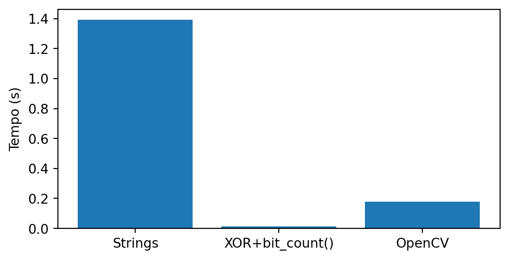
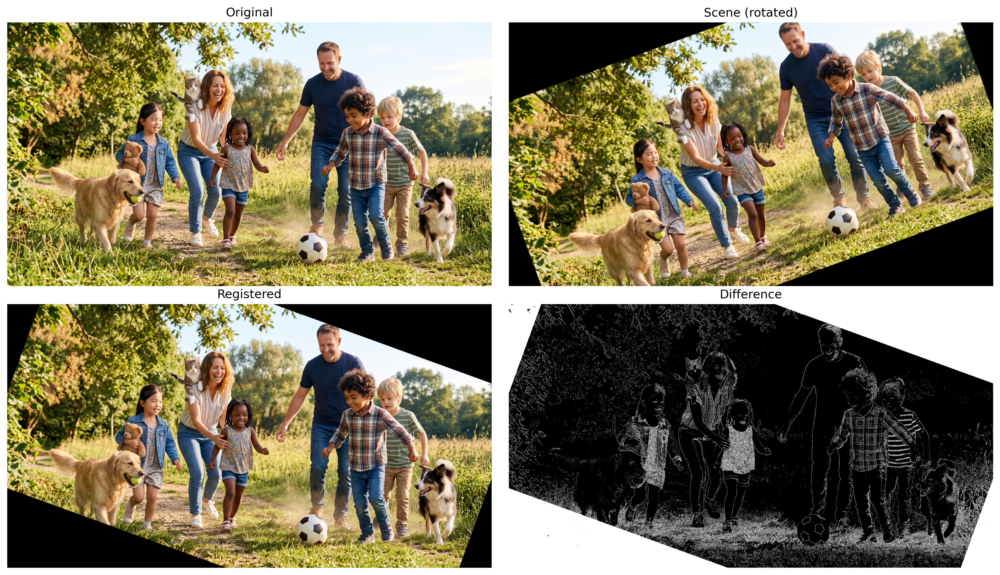
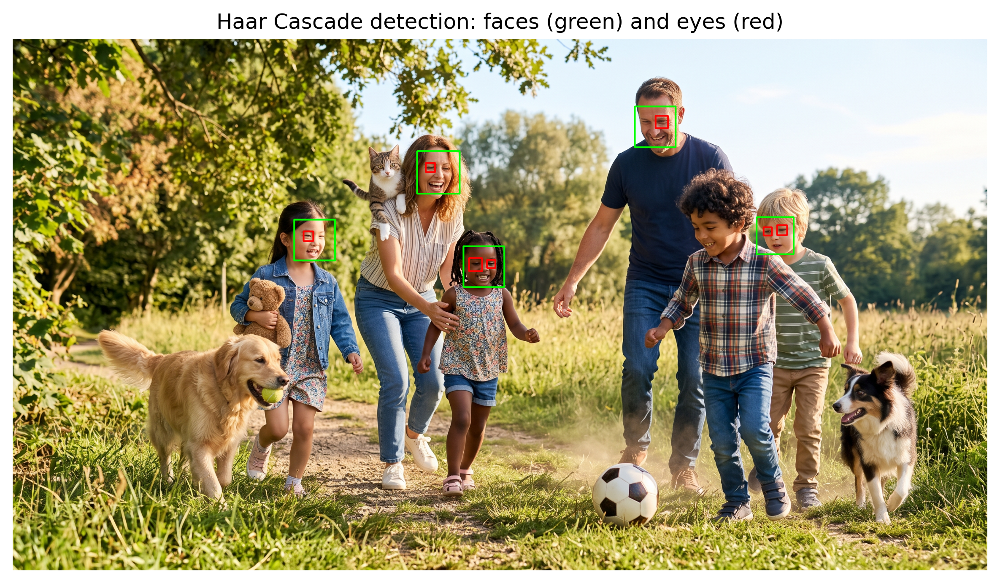
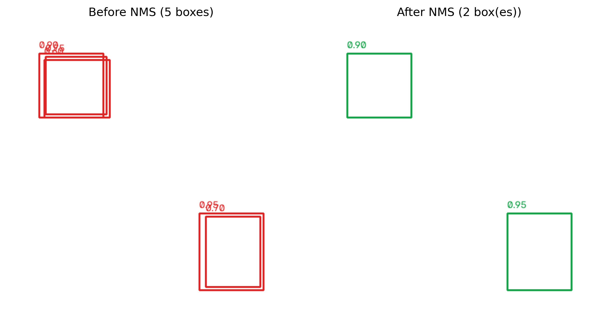
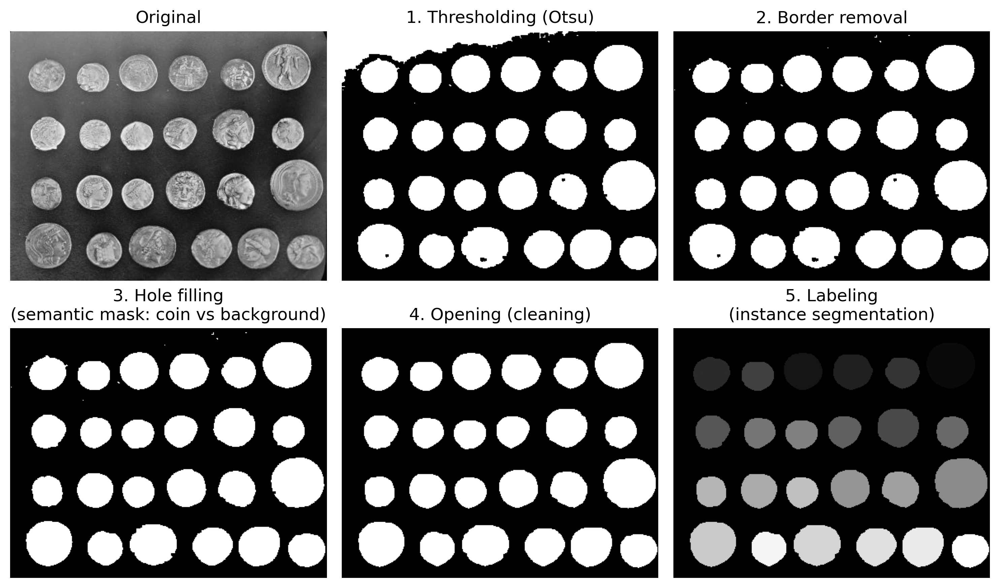

8Understanding Scenes: Feature Matching, Detection, and Segmentation
In Chapter 7, we studied how to represent images using descriptors and use these representations for classification tasks. In this chapter, the problem is broadened: in addition to recognizing patterns, it becomes necessary to establish correspondences between different images, automatically locate objects of interest, and interpret the spatial organization of a scene.
These problems constitute some of the main tasks in Computer Vision and represent a natural step after image classification. To solve them, classical methods for feature matching, object detection, and image segmentation will be presented, along with an overview of modern approaches based on Deep Learning, preparing the transition to Chapter 9.
8.1 Chapter Objectives
Upon completing this chapter, the student should be able to:
Establish correspondences between images using local detectors and descriptors, estimating geometric transformations through homographies for registration and perspective correction;
Locate objects of interest in images using classical detection methods and evaluate the results through metrics such as Intersection over Union (IoU) and the Non-Maximum Suppression (NMS) technique;
Differentiate segmentation paradigms — semantic, instance, and panoptic — understanding that panoptic segmentation unifies semantic segmentation and instance segmentation, providing a more complete description of the scene, and apply classical segmentation methods;
Extract geometric and topological descriptors from segmented objects and export them as structured annotations (CSV or YOLO format), validating the quality of the annotations through the IoU metric;
Relate classical correspondence, detection, and segmentation methods with modern approaches based on Deep Learning, studied in Chapter 9.
Figure 8.1 presents an overview of the main concepts and the relationships among the topics covered in this chapter, serving as a conceptual map to guide the reading.
Figure 8.1: Overview of the main concepts covered in this chapter, including feature matching, object detection, image segmentation, and their relationships with modern approaches based on Deep Learning. Source: prepared with the assistance of Gemini Notebook ({GOOGLE}, 2025).
8.2 Environment Setup
import os, urllib.requesturl ="https://raw.githubusercontent.com/fzampirolli/pdi-vc/master/morph/config.py"ifnot os.path.exists("config.py"): urllib.request.urlretrieve(url, "config.py")import configconfig.setup(testsuite=True)from morph import mmfrom testsuite import TestSuiteimport importlibimport subprocessimport sysdef setup_cap08():"""Installs missing libraries required for this chapter.""" pacotes = {"cv2": "opencv-python","skimage": "scikit-image","numpy": "numpy","sklearn": "scikit-learn","matplotlib": "matplotlib", }for mod, pkg in pacotes.items():if importlib.util.find_spec(mod) isNone: resultado = subprocess.run( [sys.executable, "-m", "pip", "install", "-q", pkg] )if resultado.returncode !=0:print(f"[WARNING] Failed to install {pkg} (required for module {mod}).")setup_cap08()import cv2import numpy as npimport matplotlib.pyplot as pltimport matplotlib.patches as patchesfrom skimage import data as skdatafrom skimage.filters import threshold_otsufrom skimage.measure import labelfrom skimage.morphology import remove_small_objects, opening, disk
In the previous chapter, each image was represented by a single feature vector used for classification. In several applications, however, it is necessary to compare only parts of the image, establishing correspondences between regions observed at different times, positions, or viewpoints. This task requires a local representation of the image, capable of identifying structures that are sufficiently distinct to be found again in other images.
This process is carried out in two complementary stages. Initially, a detector identifies points of interest (keypoints), usually associated with corners or regions with significant intensity variations. Subsequently, a descriptor numerically represents the neighborhood of each detected point, allowing corresponding regions to be compared between different images.
Once the pairs (point, descriptor) are obtained, matching consists of finding, for each descriptor in one image, the most similar descriptor in the other. These correspondences form the basis of several applications, such as image registration, three-dimensional reconstruction, visual navigation, and augmented reality.
8.3.1 The ORB Algorithm (Oriented FAST and Rotated BRIEF)
In this chapter, the ORB will be used, a local detector and descriptor that combines computational efficiency and robustness to rotations. The algorithm brings together three main components:
FAST (Features from Accelerated Segment Test), responsible for keypoint detection;
BRIEF (Binary Robust Independent Elementary Features), responsible for building the binary descriptor;
a neighborhood orientation estimation mechanism, which makes the descriptor approximately invariant to rotation.
The FAST detector scans all pixels in the image. For each candidate pixel, it analyzes a circle of 16 pixels around it. If a set of consecutive pixels exhibits intensity significantly higher or lower than the central pixel’s intensity, that pixel is considered a keypoint. Subsequently, candidates that are too close are filtered out, preserving only the most representative ones.
After keypoint detection, the BRIEF descriptor is computed over a neighborhood around each keypoint, rather than only over the 16 pixels used by FAST. In this region, a sampling pattern, consisting of a fixed set of point pairs \((x,y)\) distributed within a window around the keypoint, is used to perform intensity comparisons according to Equation 8.1. In ORB, the predominant neighborhood orientation is estimated from the intensity distribution in this region, and the sampling pattern is rotated according to this orientation. Furthermore, ORB employs an optimized version of BRIEF, called rBRIEF (Rotated BRIEF), in which point pairs are selected to produce more discriminative descriptors with low correlation among their bits.
\(x\) and \(y\) are two points in the neighborhood of \(p\), chosen by the BRIEF sampling pattern;
\(I(\cdot)\) represents the intensity of a pixel;
\(\tau(p;x,y)\) is the result of the binary comparison between points \(x\) and \(y\).
Each comparison generates one bit of the descriptor. The concatenation of all these comparisons forms the binary descriptor associated with the keypoint.
Since the descriptor is binary, the similarity between two points is measured by the Hamming distance, corresponding to the number of differing bits between two descriptors. This metric can be computed very efficiently through logical operations on the bits, making ORB suitable for real-time applications.
8.3.2 Exploring the ORB Simulator
Figure 8.3 interactively illustrates how the ORB descriptor is constructed. Each segment represents one of the 32 point pairs\((x,y)\) used in Equation 8.1. The segment color indicates the result of the intensity comparison: green when \(I(x)<I(y)\) (bit equal to 1) and red otherwise (bit equal to 0). The yellow arrow represents the predominant orientation of the neighborhood, estimated from the intensity centroid. The BRIEF sampling pattern is rotated according to this orientation, making the descriptor approximately invariant to rotation.
Initially, set the noise to zero and compare the bit sequence with the slider at 0° and then at 15° (record the value of the “Binary Descriptor Signature” field in each case):
In this example, both descriptors are identical, and the “Hamming Dist.” panel confirms a zero distance — evidence that the orientation estimation is correctly compensating for the image rotation.
Now click “Add Noise” and repeat the experiment. Since the noise is generated randomly on each run, the values below are only an example — yours will differ, but they should present a Hamming distance of similar magnitude (typically between 6 and 14 bits, out of a total of 32):
The noise alters part of the intensity comparisons, modifying some bits of the descriptor. The difference between two descriptors is measured by the Hamming distance, corresponding to the number of positions where the bits differ. For the descriptors above, this distance equals 10.
An efficient way to compute this distance in Python consists of applying the XOR operation (^), which identifies the differing bits, followed by the bit_count() method, which counts how many bits equal to 1 exist in the result.
def hamming(a: int, b: int) ->int:return (a ^ b).bit_count()a =0b01000000001000110110011111101010b =0b10110000001011100100111111100010hamming(a, b)
10
Figure 8.2 compares this implementation with a version based on character comparison and with the optimized OpenCV implementation (cv2.NORM_HAMMING).
import random, timeit, cv2, numpy as np, pandas as pdimport matplotlib.pyplot as pltBITS, N =256, 100_000A = [''.join(random.choice('01') for _ inrange(BITS)) for _ inrange(N)]B = [''.join(random.choice('01') for _ inrange(BITS)) for _ inrange(N)]Ai, Bi =map(lambda L: [int(x,2) for x in L], (A,B))Acv = np.array([[int(s[i:i+8],2) for i inrange(0,BITS,8)] for s in A], np.uint8)Bcv = np.array([[int(s[i:i+8],2) for i inrange(0,BITS,8)] for s in B], np.uint8)H = [ ("Strings", lambda: sum(sum(x!=y for x,y inzip(a,b)) for a,b inzip(A,B))), ("XOR+bit_count()", lambda: sum((a^b).bit_count() for a,b inzip(Ai,Bi))), ("OpenCV", lambda: sum(cv2.norm(a,b,cv2.NORM_HAMMING) for a,b inzip(Acv,Bcv)))]df = pd.DataFrame( [(n, timeit.timeit(f, number=1)) for n,f in H], columns=["Método","Tempo (s)"])df["Speedup"] = (df.iloc[0,1]/df["Tempo (s)"]).round(1)print(df)plt.figure(figsize=(6,3))plt.bar(df["Método"], df["Tempo (s)"])plt.ylabel("Tempo (s)")plt.show()
Método Tempo (s) Speedup
0 Strings 1.393038 1.0
1 XOR+bit_count() 0.012896 108.0
2 OpenCV 0.180129 7.7

Figure 8.2: Comparison of performance of different implementations of the Hamming distance.
🎯 Simulator: Orientation Alignment and BRIEF (ORB)Real-Time Orientation Invariance
The yellow vector indicates the centroid vector of the estimated orientation.
Figure 8.3: Interactive simulator of the ORB descriptor: explore the rotation logic and binary descriptor construction. Change the rotation to observe how the BRIEF binary test sampling pattern (green and red lines) dynamically orients itself to ensure angular invariance.
8.4 Feature Matching and Homography with ORB
To illustrate the feature matching process, a synthetic scene is used, obtained by rotating the original image by 20°. This transformation simulates a second capture of the same scene from a different viewpoint. Figure 8.4 presents the reference image and its rotated version, which will be used in the following steps.
Figure 8.4: Original image generated by Gemini and rotated version (20°), simulating a change of viewpoint.
8.4.1 Detecting and Matching Features with ORB
With both images available, ORB detects keypoints and computes their binary descriptors. Next, the BFMatcher from the cv2 library establishes correspondences between descriptors using the Hamming distance and cross-check validation. Finally, the matches are sorted from the smallest to the largest Hamming distance, prioritizing potentially more reliable pairs. In the following code, which generates Figure 8.5, the following steps stand out:
cv2.ORB_create(nfeatures=500) instantiates the ORB detector, limiting the search to the 500 most representative keypoints of each image. This restriction reduces computational cost and avoids selecting points with little distinctiveness.
orb.detectAndCompute(...) performs, in a single call, keypoint detection via FAST and descriptor computation via oriented BRIEF, returning the list of keypoints (kp) and their 256-bit binary descriptors (des).
cv2.BFMatcher(cv2.NORM_HAMMING, crossCheck=True) creates a brute-force matcher that uses the Hamming distance — the same metric explored in Figure 8.3 — to compare each descriptor from the original image with all descriptors from the rotated image. The crossCheck=True parameter retains only pairs in which the best match is reciprocal, that is, when the best match for A is B and, simultaneously, the best match for B is A. This criterion eliminates a large portion of ambiguous matches.
matches = sorted(...) sorts the matches from the smallest to the largest Hamming distance. The smaller this distance, the greater the similarity between descriptors and, consequently, the higher the probability that the match is correct.
Figure 8.5 displays only the five matches with the smallest Hamming distance. Although these pairs are the most promising, there is still no geometric constraint between corresponding points. As a result, some links may represent false matches, justifying the use of RANSAC in the next step to identify only geometrically consistent correspondences.
orb = cv2.ORB_create(nfeatures=500)kp1, des1 = orb.detectAndCompute(img_original, None)kp2, des2 = orb.detectAndCompute(img_cena, None)print(f"Keypoints detected: {len(kp1)} (original), {len(kp2)} (scene)")bf = cv2.BFMatcher(cv2.NORM_HAMMING, crossCheck=True)matches =sorted( bf.match(des1, des2), key=lambda m: m.distance)print(f"Matches found: {len(matches)}")def draw_matches_destacado(img1, kp1, img2, kp2, matches, espessura=2, raio_ponto=4, seed=42, cor_fixa=None):"""Draws the images side by side with lines connecting the corresponding points. If cor_fixa=None, each match receives a random color (making it easier to distinguish individual links). If cor_fixa is defined (e.g., green), all lines use the same color — useful for highlighting a specific subset, such as the RANSAC inliers. """ h1, w1 = img1.shape[:2] h2, w2 = img2.shape[:2] h =max(h1, h2) canvas = np.zeros((h, w1 + w2, 3), dtype=np.uint8) canvas[:h1, :w1] = cv2.cvtColor(img1, cv2.COLOR_GRAY2BGR) if img1.ndim ==2else img1 canvas[:h2, w1:w1+w2] = cv2.cvtColor(img2, cv2.COLOR_GRAY2BGR) if img2.ndim ==2else img2 rng = np.random.RandomState(seed) # fixed seed = reproducible colors on each runfor m in matches: pt1 =tuple(np.round(kp1[m.queryIdx].pt).astype(int)) pt2 =tuple(np.round(kp2[m.trainIdx].pt).astype(int) + np.array([w1, 0])) cor = cor_fixa if cor_fixa isnotNoneelse\tuple(int(c) for c in rng.randint(60, 256, size=3)) cv2.line(canvas, pt1, pt2, cor, espessura, lineType=cv2.LINE_AA) cv2.circle(canvas, pt1, raio_ponto, cor, -1, lineType=cv2.LINE_AA) cv2.circle(canvas, pt2, raio_ponto, cor, -1, lineType=cv2.LINE_AA)return canvas# try the 5 worst: matches[-5:]img_matches = draw_matches_destacado( img_original, kp1, img_cena, kp2, matches[:5], espessura=10, raio_ponto=15)mm.show([img_matches], titles=["Top 5 ORB Matches"], cols=1, figsize=(10, 5))
Figure 8.5: The 5 best ORB feature matches between the original image and the synthetic scene, before RANSAC filtering.
The function draw_matches_destacado() serves only a visualization purpose: it places the images side by side and draws lines between the corresponding pairs, without interfering with the estimation of correspondences.
8.5 Mathematical Modeling: Homography and RANSAC
8.5.1 Homography
In Exercises 10 and 11 of Chapter 2, the functions cv2.getPerspectiveTransform and cv2.warpPerspective were used to correct the perspective of images based on four pairs of corresponding points provided manually. In this chapter, these correspondences are now obtained automatically by ORB, making it possible to estimate the transformation between two images without user intervention.
Mathematically, this transformation is described by a homography, represented by a \(3\times3\) matrix that relates the coordinates of the same plane observed from different viewpoints:
After normalizing the homogeneous coordinates, the corresponding point is obtained:
\[
\left(\frac{x'}{w'},\frac{y'}{w'}\right).
\]
Since the homography is defined up to a scale factor, it has eight degrees of freedom. Consequently, at least four pairs of corresponding points are required to estimate its parameters.
In practice, however, correspondences automatically produced by ORB may contain incorrect associations (outliers). To estimate the homography reliably even in the presence of such errors, the RANSAC algorithm is used, which is presented in the next section.
8.5.2 RANSAC
RANSAC (Random Sample Consensus) is a robust estimation algorithm capable of fitting a geometric model even in the presence of incorrect observations (outliers). In this chapter, the model of interest is a homography, estimated from the correspondences produced by ORB.
In each iteration, the algorithm:
randomly selects a small subset of correspondences (four point pairs, in the case of the homography);
estimates a candidate homography from that subset;
checks which correspondences are compatible with this transformation, classifying them as inliers or outliers;
records the homography that yields the largest number of inliers;
re-estimates the homography using only the inliers found.
Although the example in this chapter uses a homography, RANSAC is a general-purpose algorithm and can be employed to estimate various geometric models, such as lines, circles, planes, and other transformations. In all cases, the principle is the same: generate candidate models from small random samples and select the one that exhibits the greatest consensus among the data.
To understand this process gradually, two simulators are presented.
The first, shown in Figure 8.6, uses the simplest possible example: fitting a line to a set of points containing approximately 25% outliers. The goal is to understand the fundamental steps of the algorithm — sampling, estimating a model, identifying inliers, and repeating the process — without the complexity of image registration.
🎯 Simulator: RANSAC — Robust Line Fitting to OutliersData with ~25% spurious correspondences
Threshold (px)
15
Inliers
–
Outliers
–
Iterations
–
Points (unclassified)
Inliers
Outliers
Figure 8.6: Interactive simulator of the RANSAC algorithm: adjust the distance threshold and run the algorithm to observe the separation between inliers and outliers.
The second simulator, presented in Figure 8.7, approximates the problem studied in this chapter. Instead of a single set of points, two images containing correspondences between keypoints are considered. Some correspondences are correct (inliers), while others are incorrect (outliers), resulting from errors in the descriptor matching process. In this simulator, the estimated model is a similarity transformation (rotation, scale, and translation), simpler than a full homography but sufficient to illustrate the image registration problem.
In both simulators, the algorithm executed follows exactly the same principle subsequently used to estimate the homography. The only difference lies in the fitted geometric model.
Adjust the distance threshold and run the algorithm in each simulator to observe how RANSAC identifies the inliers, discards the outliers, and estimates a consistent model using only the valid correspondences.
Figure 8.7: Interactive simulator of RANSAC applied to image registration: key points from two images are matched by a descriptor, some correspondences are spurious (outliers), and RANSAC estimates the similarity transformation that aligns most of them.
8.5.3 Estimating Homography with RANSAC
After obtaining the correspondences between key points using ORB, the next step is to estimate the homography between the two images. For this purpose, the function cv2.findHomography() is used, which employs the RANSAC algorithm to compute this transformation and return a mask indicating which correspondences were classified as inliers.
The following code performs four main operations:
extracts the coordinates of the corresponding points in each image;
estimates the homography using cv2.findHomography(..., cv2.RANSAC);
receives the mask produced by RANSAC, in which each correspondence is classified as either an inlier or an outlier;
uses this mask to select only the correspondences classified as inliers.
Figure 8.8 presents only the correspondences classified as inliers. It is observed that these pairs of points are compatible with the same geometric transformation, while inconsistent correspondences (outliers) are discarded. Consequently, the estimated homography represents the geometric relationship between the two images more faithfully.
pts1 = np.float32([kp1[m.queryIdx].pt for m in matches])pts2 = np.float32([kp2[m.trainIdx].pt for m in matches])H, mascara_inliers = cv2.findHomography(pts1, pts2, cv2.RANSAC, ransacReprojThreshold=5.0)n_inliers =int(mascara_inliers.sum())print(f"Estimated homography matrix:\n{H}\n")print(f"Inliers: {n_inliers} of {len(matches)} correspondences \ ({100*n_inliers/len(matches):.1f}%)")matches_inliers = [m for m, ok inzip(matches, mascara_inliers.ravel()) if ok]img_inliers = draw_matches_destacado( img_original, kp1, img_cena, kp2, matches_inliers, espessura=2, raio_ponto=4, cor_fixa=(0, 200, 0) # green (BGR))mm.show([img_inliers], titles=[f"Inlier Correspondences (RANSAC) — \{n_inliers}/{len(matches)}"], cols=1, figsize=(10, 5))
Figure 8.8: Correspondences classified as inliers (green) by RANSAC when estimating the homography between the two images.
8.5.4 Registering the Image
After estimating the homography, the next step consists of using it to register the scene image in the coordinate system of the original image. This process allows aligning the two images, facilitating comparison between them.
The code performs three main operations:
applies the projective transformation using cv2.warpPerspective(), with the cv2.WARP_INVERSE_MAP option, which internally applies the inverse transformation without the need to explicitly compute \(H^{-1}\);
calculates the absolute pixel-by-pixel difference between the registered image and the original image using cv2.absdiff();
displays the original image, the rotated scene, the registered image, and a map of the differences between the two images.
Figure 8.9 presents the result of the registration. It is observed that the registered image becomes visually very close to the original image, indicating that the estimated homography was able to correctly align the two views of the same scene. The difference map highlights only the regions where small discrepancies still exist, arising from interpolation errors, quantization, and the homography estimation itself.
h, w = img_original.shape[:2]# WARP_INVERSE_MAP: applies H "from back to front", avoiding the manual calculation of H^-1img_registrada = cv2.warpPerspective(img_cena, H, (w, h), flags=cv2.WARP_INVERSE_MAP)erro = cv2.absdiff(img_original, img_registrada)mm.show( # shows mm.gray(error)>10 in gray levels [img_original, img_cena, img_registrada, mm.gray(erro)>10], titles=["Original", "Scene (rotated)", "Registered", "Difference"], cols=2, figsize=(14, 8),)

Figure 8.9: Recording the scene image using the inverse homography estimated by RANSAC.
Note🧠 Why does it work? — Robustness through consensus
Many estimation methods fit a model using all available observations, seeking to minimize the total error between the observed data and the fitted model (an approach known as least squares). When outliers are present, these incorrect observations can significantly shift the resulting outcome.
RANSAC follows a different strategy. Instead of using all data simultaneously, it successively estimates models from small random samples. Each model is then evaluated by the number of correspondences compatible with it. At the end of the iterations, the model that exhibits the greatest consensus among the data is selected, that is, the one with the largest number of inliers.
Two parameters play a fundamental role in the algorithm:
the reprojection threshold, which defines the maximum distance for a correspondence to be classified as an inlier;
the number of iterations, which must be sufficiently large to increase the probability of selecting at least one sample free of outliers.
Although quite robust, RANSAC assumes that a predominant geometric model exists in the data. Its performance tends to decrease when the proportion of inliers is very small or when different geometric structures coexist in the same scene, making it difficult to identify a single dominant model.
8.6 Object Detection: Haar Cascade (Viola-Jones)
Feature matching answers the question: “where is the same object or pattern previously observed?”. Object detection solves a more general problem: automatically locating instances of a category (e.g., human faces), even if the specific objects have never been observed during training. While ORB requires two images to establish correspondences between points, Haar Cascade operates on a single image, directly identifying candidate regions that may contain the sought object.
The Haar Cascade algorithm, proposed by Viola and Jones [Viola; Jones (2001); Viola (2004)], combines Haar features, integral images, and a cascade of classifiers to perform object detection efficiently. Although more recent methods based on convolutional neural networks currently exist, Haar Cascade remains available in the OpenCV library and constitutes a classic example for the study of object detection techniques.
Its operation is based on three main components:
Haar features: simple rectangular filters that measure intensity differences between neighboring regions of the image, exploiting characteristic contrast patterns of the object, such as the eye region generally being darker than the forehead;
Integral image: data structure that allows fast computation of the sum of pixels in any rectangular region of the image: \[
I_{\text{integral}}(x,y)=\sum_{x'\le x,\;y'\le y}I(x',y'),
\] significantly reducing the computational cost of evaluating Haar features. With this structure, the sum of pixels in any rectangle can be obtained with only four accesses to the integral image;
Cascade of classifiers: during training, the AdaBoost algorithm selects and combines simple classifiers into a sequence of stages. During detection, regions that clearly do not correspond to the object are discarded in the early stages, while only the most promising candidates pass through the subsequent, more accurate and computationally more expensive stages. This strategy enables efficient search at different positions and scales of the image.
The following code, which generates Figure 8.10, uses previously trained classifiers provided by OpenCV to detect faces and then restricts the search for eyes only to the interior of each detected face. This strategy reduces false positives and decreases computational cost, as it avoids performing the eye search across the entire image.
During detection, a window traverses the image at different positions and scales. The detectMultiScale() function performs this search automatically. The scaleFactor parameter controls the reduction factor between consecutive window scales, while minNeighbors defines the minimum number of neighboring detections required to confirm an object, reducing spurious detections. The minSize parameter establishes the smallest object size considered during the search.
The function returns a list of rectangles, each described by the coordinates of the upper-left corner and the dimensions (x, y, width, height). These rectangles delimit the regions classified as objects by the detector and are used to draw the boxes shown in Figure 8.10.
def get_cascade(nome):"""Downloads (if necessary) and loads an OpenCV Haar Cascade classifier.""" caminho =f"haarcascades/{nome}" os.makedirs("haarcascades", exist_ok=True)ifnot os.path.exists(caminho): url =f"https://raw.githubusercontent.com/opencv/opencv/master/data/haarcascades/{nome}" urllib.request.urlretrieve(url, caminho)return cv2.CascadeClassifier(caminho)# Most used#face_cascade = get_cascade("haarcascade_frontalface_default.xml")# More accurate, but slowerface_cascade = get_cascade("haarcascade_frontalface_alt2.xml")# Trade-off between speed and accuracy#face_cascade = get_cascade("haarcascade_frontalface_alt.xml")# Very fast, but less accurate#face_cascade = get_cascade("haarcascade_frontalface_alt_tree.xml")# for the eyes, most used#eye_cascade = get_cascade("haarcascade_eye.xml")eye_cascade = get_cascade("haarcascade_eye_tree_eyeglasses.xml")img_original = mm.read(caminho_local)# Grayscale + histogram equalization (Chapter 3), as the Haar Cascade expectsimg_rgb = mm.rotate(img_original, angle=0)img_gray = cv2.equalizeHist(cv2.cvtColor(img_rgb, cv2.COLOR_RGB2GRAY))# Detects faces and, within each, tries to detect the eyesfaces = face_cascade.detectMultiScale( img_gray, scaleFactor=1.1, # Larger steps between scales: faster, but less sensitive minNeighbors=3, # Minimum number of overlapping detections to confirm a face minSize=(90, 90) # Ignores candidate regions smaller than 30×30 px)img_anotada = img_rgb.copy()for (x, y, w, h) in faces: cv2.rectangle(img_anotada, (x, y), (x + w, y + h), (0, 255, 0), 3) olhos = eye_cascade.detectMultiScale( img_gray[y:y+h, x:x+w], scaleFactor=1.02, minNeighbors=4, minSize=(15, 15) )for (ex, ey, ew, eh) in olhos: cv2.rectangle(img_anotada, (x+ex, y+ey), (x+ex+ew, y+ey+eh), (255, 0, 0), 4)print(f"Regions detected as face: {len(faces)}")mm.show([img_anotada], titles= ["Haar Cascade detection: faces (green) and eyes (red)"], cols=1, figsize=(8, 8))
Regions detected as face: 5

Figure 8.10: Face and eye detection with Haar Cascade.
Note🧠 Why does it work? — And why it also fails
In the image used in this example, the classifier detects the face and eyes, but it may also mark a second region over part of the image’s background as if it were a face. This is an example of a false positive: the local distribution of intensities in that region is sufficiently similar to the patterns learned during training for the cascade to mistakenly classify it as a face.
This behavior highlights one of the main limitations of Haar Cascade. Since the method bases its decision solely on Haar features, i.e., intensity differences between rectangular regions, it does not explicitly represent the shape or meaning of objects present in the image. Thus, textures and contrast patterns similar to those found in faces can produce incorrect detections. Moreover, its performance tends to decline in the presence of large variations in pose, occlusions, facial expressions, and lighting conditions different from those found in the training data.
Despite these limitations, Haar Cascade remains useful in applications that prioritize low computational cost. In situations requiring greater generalization capability under variations in object appearance, modern methods based on deep neural networks tend to perform better.
8.7 Object Detection: Bounding Boxes, IoU, and NMS
Although object detection methods employ quite different strategies—from Haar Cascade to modern detectors based on deep neural networks—their results are typically represented by bounding boxes, defined by the coordinates \((x_{min}, y_{min}, x_{max}, y_{max})\).
8.7.1Intersection over Union (IoU)
The Intersection over Union (IoU) metric quantifies the overlap between two bounding boxes, for example, the detection produced by an algorithm and the reference annotation (ground truth):
The closer to 1, the greater the agreement between the boxes; the value 0 indicates no overlap. In evaluations of object detectors, it is common to consider a detection correct when \(\mathrm{IoU}\ge0{,}5\), although specific applications may adopt different thresholds.
The IoU metric is not only used to evaluate detectors. It also constitutes the criterion employed by the Non-Maximum Suppression algorithm to decide when two bounding boxes represent the same object and, therefore, one of them must be eliminated.
8.7.2 Non-Maximum Suppression (NMS)
During detection, it is common for several bounding boxes to be associated with the same object. Non-Maximum Suppression (NMS) eliminates this redundancy in three steps:
sorts the detections by confidence score, from highest to lowest;
keeps the box with the highest confidence and eliminates those whose IoU with it exceeds a given threshold;
repeats the process with the remaining boxes until no relevant overlaps remain.
The example in Figure 8.11 illustrates this procedure with two objects, each initially represented by several overlapping boxes. In this example, each bounding box receives a confidence score, which represents the detector’s degree of confidence that that region contains the sought object.
Instead of implementing the algorithm manually, one uses the cv2.dnn.NMSBoxes function, which implements the Non-Maximum Suppression employed in several modern detectors. The desenhar_caixas function displays, side by side, the boxes before and after NMS, evidencing the reduction from five detections to only two, preserving only the highest-confidence box for each object.
def desenhar_caixas(caixas, pontuacoes, indices, cor, tamanho=(450, 450)):"""Draws the boxes (and their scores) indicated in `indices` on a white background.""" tela = np.full((tamanho[1], tamanho[0], 3), 255, dtype=np.uint8)for i in indices: x0, y0, x1, y1 = caixas[i] cv2.rectangle(tela, (x0, y0), (x1, y1), cor, 2) cv2.putText(tela, f"{pontuacoes[i]:.2f}", (x0, y0 -8), cv2.FONT_HERSHEY_SIMPLEX, 0.5, cor, 1, cv2.LINE_AA)return telacaixas = np.array([ [50, 50, 150, 150], [60, 55, 155, 145], [58, 60, 160, 150], [300, 300, 400, 420], [310, 305, 395, 415],])pontuacoes = np.array([0.90, 0.75, 0.60, 0.95, 0.70])# cv2.dnn.NMSBoxes expects boxes in the format (x, y, width, height)caixas_xywh = np.column_stack([ caixas[:, 0], caixas[:, 1], caixas[:, 2] - caixas[:, 0], caixas[:, 3] - caixas[:, 1]])mantidas = cv2.dnn.NMSBoxes( bboxes=caixas_xywh.tolist(), scores=pontuacoes.tolist(), score_threshold=0.0, # no cut by minimum confidence here nms_threshold=0.5# IoU threshold to consider two boxes redundant).flatten()img_antes = desenhar_caixas(caixas, pontuacoes, range(len(caixas)), cor=(220, 38, 38))img_depois = desenhar_caixas(caixas, pontuacoes, mantidas, cor=(22, 163, 74))mm.show( [img_antes, img_depois], titles=[f"Before NMS ({len(caixas)} boxes)", \f"After NMS ({len(mantidas)} box(es))"], cols=2, figsize=(9, 4.5))

Figure 8.11: Effect of Non-Maximum Suppression (NMS): multiple redundant detections (left) are reduced to one detection per object (right).
Note🧠 Why It Works — Redundancy Elimination
NMS (Non-Maximum Suppression) does not alter the quality of detections produced by the detector. Its role is to eliminate redundant bounding boxes that represent the same object, keeping only the one with the highest confidence score.
Its effectiveness depends on the adopted IoU threshold. A very low value may remove boxes corresponding to different objects whose overlap is high, while a very high value may retain multiple overlapping boxes for the same object.
NMS also does not eliminate isolated false positives. If an incorrect region is detected by only one box, it will be kept, since there is no other redundant detection to compare it against. For this reason, NMS is applied as a post-processing step, using only the bounding boxes and their confidence scores produced by the detector.
8.8 Visual Segmentation: Semantic, Instance, and Panoptic
A bounding box roughly indicates the position of an object, but it does not identify which pixels belong to it. Visual segmentation solves this problem by assigning a label to each pixel in the image. Depending on the information produced, three main paradigms are distinguished, summarized in Table 8.1.
Table 8.1: Comparison between the main visual segmentation paradigms.
Paradigm
Question it answers
Distinguishes objects of the same class?
Semantic
“To which class does each pixel belong?”
No. All pixels of the same class receive the same label.
Instance
“Which pixels belong to each individual object?”
Yes. Each object receives its own identifier.
Panoptic
Combines the previous two.
Yes. Each pixel receives a class and, when applicable, an instance identifier.
In semantic segmentation, each pixel receives only the label of its class. In instance segmentation, in addition to the class, distinct objects belonging to the same category are differentiated from one another. Panoptic segmentation combines these two types of information, assigning to each pixel a class and, when applicable, an instance identifier.
8.8.1 Semantic Segmentation by Thresholding
Before the popularization of methods based on deep neural networks — the topic of Chapter 9 —, many segmentation applications were solved using classical image processing techniques. One of the simplest examples involves separating object and background by thresholding, producing a binary mask. This mask characterizes a semantic segmentation, as each pixel now belongs to one of two classes: coin or background.
Figure 8.12 uses the coin image from the scikit-image library. This example revisits the concepts of thresholding and mathematical morphology studied in Chapter 4, replacing the previous example, which used a different coin image.
Initially, a morphological closing is applied to smooth small imperfections on the coin surfaces. Then, Otsu’s thresholding produces the binary mask that separates coins and background. After removing objects connected to the image border, filling internal regions, and eliminating small noises through morphological operations, a suitable semantic mask is obtained for the subsequent steps.
8.8.2 Instance Segmentation by Labeling
A semantic mask only informs the class of each pixel, but it does not distinguish different objects belonging to the same category. To obtain an instance segmentation, connected component labeling is applied, which assigns a different identifier to each connected region of the binary mask.
In this example, each connected component corresponds to an individual coin. Thus, labeling produces an instance segmentation, allowing each coin present in the image to be identified, counted, and measured separately.
img_moedas = skdata.coins()# 1. Morphological closing: smooths edges and fills small gaps on the# coin surface before thresholdingfechamento = mm.close(img_moedas, mm.sedisk(4))# 2. Otsu thresholding (Chapter 4): separates coins (bright) from background (dark)mascara_bruta = mm.threshold(fechamento)# 3. Removes objects connected to the image border — coins cut off at the# edges do not form complete instances and would interfere with countingmascara_sem_borda = mm.edgeoff(mascara_bruta)# 4. Hole filling: fills any internal regions not detected by the threshold,# ensuring each coin is a solid diskmascara_semantica = mm.clohole(mascara_sem_borda)# 5. Morphological opening: removes residual noise and disconnects coins that# may touch, preparing the mask for Labelingmascara_limpa = mm.open(mascara_semantica, mm.sedisk(6))# 6. Connected-component labeling: each isolated coin receives a distinct# instance identifierrotulos_instancias = mm.label(mascara_limpa)print(f"Instances (individual coins) identified: {np.max(rotulos_instancias)}")mm.show( [img_moedas, mascara_bruta, mascara_sem_borda, mascara_semantica, mascara_limpa, rotulos_instancias], titles=["Original","1. Thresholding (Otsu)","2. Border removal","3. Hole filling\n(semantic mask: coin vs background)","4. Opening (cleaning)","5. Labeling\n(instance segmentation)" ], cols=3, figsize=(10, 6))
Instances (individual coins) identified: 24

Figure 8.12: Classic segmentation (not deep learning-based): semantic mask (coin vs background) via Otsu thresholding, and instance segmentation via connected-component labeling.
Note🧠 Why Does It Work? — And Where the Classical Approach Encounters Limitations
In this example, segmentation is facilitated by the contrast between the coins and the background, as well as by the relative intensity homogeneity within each coin. Otsu’s thresholding efficiently separates these two regions, while morphological operations remove small imperfections from the binary mask. Finally, connected-component labeling assigns a distinct identifier to each connected region, yielding instance segmentation.
This strategy, however, directly depends on the quality of the binary mask. If two objects are joined, overlapping, or exhibit insufficient contrast against the background, they may be represented as a single region or fail to be segmented correctly. Furthermore, methods based predominantly on pixel intensity have limited capacity to distinguish objects of different classes with similar appearances.
Modern segmentation methods based on deep neural networks learn visual representations directly from training data, which generally grants them a greater ability to handle variations in illumination, texture, shape, and occlusion. Panoptic segmentation extends this approach by combining, in a single representation, the semantic classification of all pixels and the individual identification of objects present in the scene.
8.8.3 Alternative: Distance Transform + Watershed
Morphological opening can separate touching coins by eroding the binary mask. However, this operation modifies the contour of all objects, including those that were already isolated. An alternative, introduced in Chapter 4, consists of combining the distance transform with the watershed algorithm, using markers obtained from the binary mask itself.
The procedure is carried out in three steps:
the distance transform of the binary mask is computed, assigning to each pixel of the object its distance to the nearest background;
a threshold is applied to the distance transform to obtain markers located in the central regions of the coins;
the watershed algorithm is used to expand these markers up to the boundaries between objects, separating coins that are in contact.
Figure 8.13 presents these steps. The markers are obtained in the central regions of the distance transform and used as seeds for the watershed, which propagates each label until it encounters the boundaries between neighboring objects.
Comparing with morphological opening, both approaches can separate touching coins. However, since the watershed uses markers to divide connected regions, without applying erosion directly to the mask, the original contours tend to be better preserved, favoring the acquisition of geometric measurements such as area, perimeter, and circularity.
# Reuses the semantic mask BEFORE aggressive opening (without contour erosion)mascara_base = mascara_semantica# 1. Distance transform: each pixel of the mask receives the distance to the nearest backgrounddistancia = mm.dist(mascara_base)# Markers obtained by thresholding the distance transform.# The central regions of the coins remain connected and are used# as seeds for the watershed algorithm.marcadores = mm.label( np.uint8(distancia >0.5* distancia.max()))# 3. Watershed: propagates each marker within the mask to the contact points between coinsrotulos_watershed = mm.watershed(marcadores, mascara_base)print(f"Morphological opening (clean_mask): {np.max(rotulos_instancias)} instances")print(f"Distance + watershed: {np.max(rotulos_watershed)} instances")mm.show( [mascara_base, distancia, mm.dil(marcadores,mm.sedisk(5)), rotulos_watershed], titles=["Semantic mask\n(without opening, without erosion)","Distance transform","Markers\n(regional maxima)","Watershed\n(separated instances)" ], cols=4, figsize=(11, 3.2))
Figure 8.13: Separation of touching coins via distance transform + watershed, without erosion of the coin contours.
Note🧠 Why It Works? — Markers and Watershed
The distance transform assigns higher values to pixels farthest from the background, which are typically located in the most central regions of objects. By applying a threshold to this transform, markers are obtained within each coin, favoring the acquisition of one marker per object.
The watershed algorithm uses these markers as seeds and propagates their labels until two growing regions meet. The meeting points between these regions define the boundaries between adjacent objects.
The performance of this method depends on the quality of the markers. Highly elongated objects, objects with irregular shapes, or those containing multiple maxima in the distance transform can generate additional markers, resulting in oversegmentation. In more complex applications, modern instance segmentation methods based on deep neural networks directly learn suitable representations to separate objects from the training data, eliminating the need for explicit marker construction and other geometric heuristics.
8.8.4 Measurement and Extraction of Attributes with mm.measure
After segmentation and labeling of objects, the next step involves measuring their geometric properties. To accomplish this, the morph library provides the mm.measure function, which takes a binary image and returns, for each object, a set of geometric descriptors organized in a list of dictionaries.
Among the computed descriptors, notable ones include the area, perimeter, centroid, bounding box, circularity, solidity, and the number of vertices of the approximated contour. These vertices are obtained by approximating the contour with a simplified polygon, calculated by the approxPolyDP function, which preserves the general shape of the object using a reduced number of segments.
assuming a value equal to 1 for a perfect circle and lower values for shapes that are progressively less circular.
Solidity is given by
\[
\text{Solidity}=
\frac{\text{Area}}
{\text{Area of the Convex Hull}},
\]
indicating how much the object fills its convex hull. Values close to 1 characterize convex objects, while lower values indicate the presence of concavities.
The number of vertices provides an indication of the complexity of the object’s shape. For example, a triangle tends to produce three vertices and a rectangle four, while objects with curved contours, such as coins, usually result in polygons with a higher number of vertices, depending on the precision adopted in the approximation.
Since the coins in this example have approximately circular and convex contours, it is expected that circularity assumes high values (typically between 0.8 and 0.9) and that solidity remains very close to 1. The number of vertices depends on the parameter used in the polygonal approximation (precision), increasing as the approximation preserves more contour details. Together, these descriptors can be employed in object classification, identification of spurious components remaining from segmentation, and performing quantitative measurements on the image.
# mm.measure receives a binary image; each connected component corresponds# to an individual coin.medidas = mm.measure(mascara_limpa, precision=0.01)if medidas:print(f"Total of cataloged objects: {len(medidas)}")print(f"{'ID':<4}{'Area':<10}{'Perimeter':<12}{'Circularity':<14}",end="")print(f" {'Solidity':<10}{'Vertices':<8}")for m in medidas:print(f"{m['id']:<4}{m['area']:<10.1f}{m['perimeter']:<12.2f}"f"{m['circularity']:<15.3f}{m['solidity']:<10.3f}{m['vertices']:<8}")else:print("No measurements returned.")
It is observed that 24 coins were identified. The solidity measures remain close to 1, indicating essentially convex contours, while circularity varies between approximately 0.84 and 0.90 due to irregularities in the discretized contour. The number of vertices ranges from 9 to 14, reflecting the polygonal approximation used to represent each coin.
8.8.5 Exporting Annotations: from mm.measure to the YOLO Format
In addition to geometric descriptors, mm.measure calculates, for each object, its bounding box. This information can be automatically exported using the mm.saveMeasures function, allowing annotation files to be generated for different applications without the need for manual labeling.
The function supports three output formats:
fmt="csv": exports all geometric descriptors, useful for exploratory analysis, measurement, and attribute-based classification;
fmt="txt": writes the descriptors in a simple tabular format;
fmt="yolo": generates annotations compatible with the format used by detectors from the YOLO (You Only Look Once) family.
In the YOLO format, each object is represented by a line containing
\[
\text{class}\;\;x_c\;\;y_c\;\;w_n\;\;h_n,
\]
where \((x_c,y_c)\) represents the center of the bounding box and \((w_n,h_n)\) its dimensions, all normalized by the image dimensions:
where \((x,y)\) correspond to the coordinates of the top-left corner of the bounding box, \((w,h)\) to its dimensions in pixels, and \((W,H)\) to the width and height of the image. Normalization makes the annotations independent of image resolution, allowing the same format to be used for images of different sizes.
The following code exports the measurements extracted from the coins to the CSV and YOLO formats. The CSV output preserves all geometric descriptors calculated by mm.measure, while the YOLO format file contains only the class and the normalized bounding box of each object, as required by detectors from that family.
This representation will be used again in Chapter 9, dedicated to object detection methods based on Deep Learning.
# Exports the measurements extracted from the coins in two annotation formatsaltura_img, largura_img = img_moedas.shape[:2]mm.saveMeasures("moedas.csv", medidas, fmt="csv")mm.saveMeasures("moedas.txt", medidas, fmt="yolo", img_width=largura_img, img_height=altura_img, class_id=0)print("--- Snippet of coins.csv ---")withopen("moedas.csv") as f:for linha in f.readlines()[:4]:print(linha.rstrip())print("\n--- Snippet of coins.txt (YOLO format) ---")withopen("moedas.txt") as f:for linha in f.readlines()[:4]:print(linha.rstrip())
8.8.6 Validation of Annotations by IoU: mm.verifyBoundBox
Before using annotations in training or model evaluation, it is important to verify whether they agree with a reference set (ground truth).
The mm.verifyBoundBox function performs this comparison using the IoU (Intersection over Union) metric, presented earlier in this chapter. For each candidate bounding box, the function calculates its overlap with the ground-truth boxes and counts those whose IoU exceeds a specified threshold.
In the following example, a synthetic ground truth is constructed from the first five bounding boxes obtained by mm.measure. Since the compared annotations are the same ones used to build the ground truth, it is expected that each object finds exactly one match with \(\mathrm{IoU}\ge0{,}5\). The purpose is merely to illustrate the operation of the mm.verifyBoundBox function; in real applications, the ground truth must be obtained independently, for instance, through manual annotation.
# Synthetic answer matrix in the format (class, x1, y1, x2, y2), normalizedgabaritos = np.array([ [0, *[(m["bbox"][0] + d) / largura_img for d in (0,)], (m["bbox"][1]) / altura_img, (m["bbox"][0] + m["bbox"][2]) / largura_img, (m["bbox"][1] + m["bbox"][3]) / altura_img]for m in medidas[:5]])acertos =0for m in medidas[:5]: correspondencias = mm.verifyBoundBox( object_id=0, bbox=m["bbox"], matrix=gabaritos, width=largura_img, height=altura_img, threshold=0.5 ) acertos +=int(correspondencias >0)print(f"Object {m['id']}: {correspondencias} answer(s) match with IoU >= 0.5")print(f"\nTotal validated objects: {acertos}/{len(medidas[:5])}")
Object 1: 1 answer(s) match with IoU >= 0.5
Object 2: 1 answer(s) match with IoU >= 0.5
Object 3: 1 answer(s) match with IoU >= 0.5
Object 4: 1 answer(s) match with IoU >= 0.5
Object 5: 1 answer(s) match with IoU >= 0.5
Total validated objects: 5/5
It is observed that the five objects were correctly associated with their respective ground truth boxes, resulting in five valid matches. In real-world applications, this same strategy can be employed to automatically compare the bounding boxes produced by a detector with reference annotations, enabling a quantitative assessment of its performance through the IoU metric.
8.8.7 Viewing Saved Annotations: mm.showBoundBox
After exporting annotations, it is convenient to verify whether the bounding boxes were saved correctly. To this end, the morph library provides the mm.showBoundBox function, illustrated in Figure 8.14.
The function reads an annotation file in the yolo, csv, or txt formats, reconstructs the bounding boxes, and overlays them on the original image, facilitating visual inspection of the result. This makes it possible to quickly confirm whether the annotations align with the objects, without the need to examine them manually.
This function complements mm.verifyBoundBox. While mm.verifyBoundBox performs a quantitative validation, comparing annotations against a reference set using the IoU metric, mm.showBoundBox provides a qualitative validation, allowing for visual inspection of the reconstructed bounding boxes.
Figure 8.14: Bounding boxes reconstructed from the YOLO annotations file exported by mm.saveMeasures, overlaid on the original image of the coins.
Note🧠 Why It Works — From Segmentation to Annotations
After segmenting an image, it is possible to automatically measure each object (mm.measure) and convert these measurements into annotations (mm.saveMeasures) for various formats, including the one used by YOLO-family detectors. This procedure allows for the automatic generation of initial annotation sets in controlled scenarios, significantly reducing the manual labeling workload.
Before using these annotations in model training or evaluation, it is recommended to compare them against a reference set (ground truth). The function mm.verifyBoundBox automates this step using the IoU metric, enabling quantification of the agreement between the generated bounding boxes and the reference annotations. Additionally, mm.showBoundBox allows for visual inspection of the reconstructed annotations overlaid on the original image, facilitating the identification of normalization, positioning, or coordinate-ordering errors that may not be evident through numerical validation alone.
Together, mm.measure, mm.saveMeasures, mm.verifyBoundBox, and mm.showBoundBox implement a complete workflow for measuring segmented objects, generating annotations, evaluating them, and visually inspecting them. When segmentation yields reliable results, this workflow can significantly reduce the need for manual labeling in dataset construction.
8.9 Overview of Modern Models
The techniques presented in this chapter—such as cascade detectors, thresholding-based segmentation, and post-processing with IoU and NMS—remain important for understanding the fundamentals of Computer Vision. Currently, however, many applications employ Deep Learning models capable of automatically learning discriminative representations from large datasets, eliminating the need for manually defined features.
Table 8.2 presents some representative architectures for image detection and segmentation. The goal is merely to situate them within the context of the tasks studied in this chapter. Their operating principles, training, and application will be discussed in detail in Chapter 9.
Table 8.2: Representative Deep Learning architectures for image detection and segmentation.
Model
Task
Central Idea
YOLO (You Only Look Once)
Object detection
Detects objects in a single pass through the network, estimating classes and bounding boxes. Recent versions, such as YOLO26 (2026), eliminate the Non-Maximum Suppression (NMS) step, making inference fully end-to-end.
Faster R-CNN
Object detection
Generates candidate regions and refines them before classification, prioritizing accuracy.
SSD (Single Shot Detector)
Object detection
Detects objects at different scales in a single pass, seeking a balance between speed and accuracy.
U-Net
Semantic segmentation
Produces a mask that classifies each pixel of the image according to its class.
Mask R-CNN
Instance segmentation
Extends Faster R-CNN by adding an individual mask for each detected object.
Segment Anything (SAM)
Prompt-guided segmentation
Segments objects based on indications such as points, bounding boxes, or masks. It evolved into SAM 2, with support for video and temporal object tracking, and SAM 3, which enables segmentation guided directly by text descriptions.
One observes an evolution of the tasks addressed in this chapter. Models such as YOLO, Faster R-CNN, and SSD localize objects using bounding boxes. Mask R-CNN extends this capability by also producing a mask for each detected instance. More recent models, such as Segment Anything (SAM), allow segmenting objects from different types of prompts, making the process more flexible.
This evolution follows the sequence of concepts developed throughout the chapter: from feature matching and approximate localization via bounding boxes to the precise segmentation of pixels belonging to each object. In Chapter 9, these tasks will be revisited from the perspective of Deep Learning, exploring how modern neural networks automatically learn representations capable of overcoming many of the limitations of the classical methods presented here.
8.10 Limitations of Classical Approaches and Motivation for Deep Learning
The examples developed in this chapter illustrate three fundamental problems in Computer Vision: feature matching, object detection, and image segmentation. Although the classical techniques presented are efficient in several scenarios, they all share an important limitation: they rely on manually defined features to describe or identify the objects of interest.
ORB uses binary descriptors capable of establishing correspondences between points under rotations and moderate scale changes, but it was not designed to recognize object categories.
Haar Cascade employs a fixed set of rectangular filters, working well for objects with relatively standardized appearances, such as frontal faces, but becoming more susceptible to false positives in complex scenes.
Thresholding-based segmentation exploits intensity differences between object and background, being suitable for images with good contrast, yet limited in the presence of illumination variations, textures, or scenes containing multiple object classes.
In all these cases, performance depends on the ability of the chosen features to adequately represent the variability present in the images. In real-world applications, factors such as changes in pose, illumination, scale, occlusions, and category diversity make this task increasingly difficult, reducing the generalization of classical methods.
Chapter 9 presents a different approach to these problems through Convolutional Neural Networks (CNNs). Instead of using manually defined features, these models automatically learn, from large datasets, representations suitable for each task. The modern architectures presented in the previous section—such as YOLO, Faster R-CNN, U-Net, Mask R-CNN, and Segment Anything (SAM)—follow this principle and represent an evolution of the classical techniques studied in this chapter, expanding their capacity to handle the diversity and complexity of real-world images.
8.11 Summary
In this chapter, classical Computer Vision methods for feature matching, object detection, and image segmentation were studied. At the end, some modern architectures based on Deep Learning were presented, preparing the transition to Chapter 9. The main concepts covered were:
ORB: keypoint detection, binary descriptor construction, and feature matching using the Hamming distance.
Homography and RANSAC: robust estimation of projective transformations for image registration and removal of inconsistent matches.
Haar Cascade: object detection using Haar features, integral image, and cascade classifiers.
Classical segmentation: thresholding, morphological operations, connected-component labeling, distance transform, and the watershed algorithm for instance segmentation.
Object measurement and annotation: extraction of geometric attributes with mm.measure, automatic annotation export (mm.saveMeasures), and validation via IoU (mm.verifyBoundBox) and visual inspection (mm.showBoundBox).
Detection evaluation: use of the Intersection over Union (IoU) metric and Non-Maximum Suppression (NMS).
Modern models: overview of the YOLO, Faster R-CNN, SSD, U-Net, Mask R-CNN, and Segment Anything (SAM) architectures, which will serve as the foundation for studying Deep Learning methods in Chapter 9.
Next Steps
In this chapter, classical methods for solving problems of feature matching, object detection, and image segmentation were presented, based on manually defined descriptors, filters, and geometric models.
In Chapter 9, these same problems will be revisited from the perspective of Deep Learning, with an emphasis on Convolutional Neural Networks (CNNs). Instead of using manually engineered features, these models automatically learn representations from large datasets, forming the foundation of the main modern Computer Vision systems for object detection, segmentation, and recognition.
8.12 🤖 Using Gemini Notebook as a Study Aid
Gemini Notebook can be used as a supplementary tool for reviewing the concepts presented in this chapter. Based on the content provided as reference, it can answer questions, create summaries, clarify doubts, and explore topics interactively.
Responses generated by Gemini Notebook are produced automatically and may contain inaccuracies. Use them as supplementary study material, cross-referencing the information with the content of this book and, when necessary, with other academic sources.
8.13 Exercise List
The following exercises consolidate the concepts presented in this chapter through adaptations, experiments, and extensions of the algorithms developed throughout the text, using the didactic library morph.
(10%) Investigate the influence of rotations on the stability of the ORB detector and descriptor. Using the image skimage.data.astronaut(), generate rotated versions at angles of \({0^\circ,45^\circ,90^\circ,135^\circ,180^\circ}\). For each case, determine the number of correspondences obtained by the BFMatcher and the fraction of inliers identified by RANSAC. Present the results in a table and discuss the robustness of the method to the analyzed rotations.
(15%) Compare the FAST corner detector with the Harris detector (Chapter 6). Measure the average execution time and the number of detected points on the images skimage.data.camera(), skimage.data.gravel(), and skimage.data.brick(). Discuss the advantages and limitations of each detector in terms of speed and repeatability.
(15%) Investigate the sensitivity of the Haar Cascade to the presence of noise and blur. Add Gaussian noise (\(\sigma\in{5,10,20}\)) and motion blur to the image skimage.data.astronaut(). Vary the scaleFactor and minNeighbors parameters of the detectMultiScale() function and discuss the effects on false positives, false negatives, and the number of detected faces.
(15%) Manually implement the Intersection over Union (IoU) metric for bounding boxes and compare your results with the mm.IoU function. Then, create a reference box and ten boxes obtained through displacements and scale variations, building a graph that relates the applied displacement to the IoU value obtained.
(15%) Evaluate the Non-Maximum Suppression (NMS) algorithm. Create a synthetic scene containing three objects, each represented by at least five overlapping boxes with different confidence scores. Run the algorithm for IoU thresholds equal to \({0.2,0.4,0.6,0.8}\), visualize the results, and discuss the influence of this parameter on the number of boxes retained.
(15%) Apply the segmentation pipeline presented in this chapter (Otsu thresholding, morphological operations, and mm.measure) to the image skimage.data.coins(). Export the measurements using mm.saveMeasures(fmt="csv") and produce histograms of the distributions of area, circularity, and solidity. Discuss which of these attributes are most suitable for characterizing the coins.
(15%) Construct a synthetic image containing circles, rectangles, and triangles, some partially overlapping. Perform segmentation, extract the measurements with mm.measure, and automatically generate annotations in YOLO format using mm.saveMeasures(fmt="yolo"). Then, deliberately modify some bounding boxes and use mm.verifyBoundBox to evaluate, at different IoU thresholds, how many annotations remain valid. Discuss the influence of overlap between objects on the quality of the obtained annotations.
(Bonus – 10%) Develop a simple classifier, such as k-NN (Chapter 7), using only the geometric attributes produced by mm.measure (area, circularity, solidity, and number of vertices). Use a set of synthetic shapes (circles, rectangles, and triangles) with different scales and rotations, evaluate the obtained accuracy, and discuss the capacity of these descriptors to distinguish different classes of objects.
Chapter References
The concepts and algorithms presented in this chapter were grounded in classic and contemporary references from the DIP-CV literature:
Gonzalez (2018), for the fundamentals of image segmentation, morphological operations, connected component labeling, and geometric attribute extraction.
Szeliski (2022), for the concepts of feature matching, geometric transformations, homographies, object detection, and segmentation in Computer Vision.
Rublee (2011), for the description of the ORB algorithm (Oriented FAST and Rotated BRIEF), used in the detection, description, and matching of local features.
Fischler (1981), for the original formulation of the RANSAC algorithm (Random Sample Consensus), employed in the robust estimation of geometric models in the presence of inconsistent data.
Viola (2001), Viola (2004), and Lienhart (2002), for the foundations of the Haar Cascade detector, including Haar features, integral images, cascade classifiers, and extensions used in modern implementations.
Kirillov (2019), for the definition of panoptic segmentation, which integrates semantic segmentation and instance segmentation into a single representation.
Redmon (2016), Ren (2015), Ronneberger (2015), He (2016), and Kirillov (2019), for modern Deep Learning-based models applied to image detection and segmentation, including YOLO, Faster R-CNN, U-Net, Mask R-CNN, and Segment Anything (SAM).
8.14 💻 Practical Part with Programming Exercises
The present list of programming exercises (PE) consolidates the theoretical formulations presented throughout Chapter 8 — Feature Matching, Object Detection, and Classical Segmentation — through an applied practical track. As in the previous chapter, the PEs isolate the intermediate quantities of each technique — the distance between binary descriptors, the terms of an integral image, the count of inliers of a candidate model, the overlap between bounding boxes, and the label of each connected component — allowing each step of the reasoning to be manually validated without relying on OpenCV or external images.
The sequencing of the exercises reproduces the conceptual flow of the chapter: it begins with the Hamming distance, the core of binary descriptor matching such as ORB; it advances to the counting of inliers that underpins RANSAC in the robust estimation of a homography; it proceeds with the integral image, the computational trick that makes Haar Cascade viable in real time; it delves into IoU and Non-Maximum Suppression, the post-processing common to virtually every object detector; and it concludes with connected component labeling, the classical approach — and its limitations — for segmenting individual instances in a binary mask.
🎯 Objective of this Notebook
This notebook allows you to develop, validate, organize, and test solutions for Programming Exercises (EPs) in interactive environments, such as Colab, using the same test cases as Moodle, and copying them there only when registering the official grade.
Download
Download morph.py and testsuite.py by running the cell below:
To evaluate the tests, run TestSuite("EP08_01.extension").run() in a new cell, replacing the extension with that of the language used (.py, .java, .c, .cpp, .js, or .r). The system downloads the test cases from GitHub, runs the program, and calculates the grade automatically.
To test Python code directly, without saving a file, use run_code(code) passing the code as a string in a variable code:
code ="""# ... your code here ..."""TestSuite("EP08_01").run_code(code)
🛠️ Summary of Methods in morph.py (Ch. 8)
The morph.py library provides functions for connected component analysis, contour extraction, geometric metrics, and annotations:
Components and Contours (connectedComponents, findContours) Label connected regions and extract contours from binary images.
Contour Properties (contourArea, arcLength, convexHull, approxPolyDP, fitLine) Compute area, perimeter, convex hull, polygonal approximation, and line fitting for a contour.
Enclosing Geometry (boundingRect, minAreaRect, boxPoints, minEnclosingCircle, fitEllipse) Determine enclosing rectangles (aligned or oriented), ellipses, and the smallest bounding circle.
Measurement Extraction and Persistence (measure, saveMeasures) Extract geometric descriptors of objects (area, circularity, solidity, centroid) and export the data to CSV, text, or YOLO format.
Evaluation and Visualization (IoU, verifyBoundBox, showBoundBox) Compute the Intersection over Union, validate bounding boxes against ground truths, and draw annotated bounding boxes on the image.
8.14.1 EP08_01 🟢 Hamming Distance and Binary Descriptor Matching
ORB, used in Practical Project 1 of this chapter, describes the neighborhood of each keypoint as a sequence of bits — and, therefore, the comparison between two descriptors does not use the Euclidean distance of the k-NN from Chapter 7, but rather the Hamming distance: the number of positions in which the bits differ. Before calling cv2.BFMatcher(cv2.NORM_HAMMING), you were tasked with manually implementing this brute-force matching — the same step that, when executed internally by OpenCV, precedes the robust homography estimation by RANSAC.
8.14.1.1 📋 Implementation Guidelines
Quantities: Read the integers \(N\) and \(M\) — the number of descriptors extracted from image A and image B, respectively.
Descriptors from A: Read \(N\) lines, each containing a binary descriptor (a string of characters 0 and 1, all of the same length).
Descriptors from B: Read \(M\) lines, in the same format.
Threshold: Read the integer \(\tau\) — the maximum acceptable Hamming distance for a match to be considered valid.
Hamming Distance: For two binary descriptors \(a\) and \(b\) of the same length, \[
d_H(a, b) = \sum_{k} \mathbb{1}[a_k \neq b_k],
\] i.e., the count of positions in which the bits differ.
Nearest-neighbor matching: For each descriptor \(a_i\) from A (\(i\) in reading order, starting at \(0\)), compute its Hamming distance to all descriptors from B and find the one with the smallest distance. In case of a tie between two or more descriptors from B with the same minimum distance, choose the one with the smallest index.
Threshold filtering: If the smallest distance found is \(\le \tau\), the match is valid; otherwise, \(a_i\) has no corresponding match.
Output: For each \(i\) from \(0\) to \(N-1\), in reading order, print a line: i j d if there is a valid match (where \(j\) is the index of the chosen descriptor from B and \(d\) its distance), or i -1 otherwise. At the end, print Total correspondências válidas: X.
8.14.1.2 📌 Computational Constraints
Same length: all descriptors (from A and B) have exactly the same number of bits.
Brute force: compare each descriptor from A to all those from B — no indexing or acceleration structure is required.
Tie-breaking by smallest index in B, and never by the reading order of A (which is already natural, since each \(a_i\) is handled independently).
8.14.1.3 🧠 Theoretical Foundation
Element
Role in ORB matching
Binary descriptor (BRIEF)
Each bit is the result of an intensity comparison between two pixels in the neighborhood
Hamming distance
Dissimilarity metric between binary strings; much faster to compute than the Euclidean distance (XOR operation + bit counting)
Nearest neighbor
Matching criterion: each point from A is paired with the point from B whose descriptor is most similar
Threshold \(\tau\)
Filters unreliable matches even before RANSAC — but, as discussed in the chapter, some incorrect matches still pass, requiring the robustness of RANSAC
8.14.1.4 📦 Input and Output Specification (VPL)
Input:
Line 1: Integers \(N\) and \(M\).
Next \(N\) lines: one binary descriptor per line (string of 0s and 1s).
Next \(M\) lines: one binary descriptor per line, in the same format.
Last line: Integer \(\tau\).
Output:
\(N\) lines, one per descriptor from A, in the format i j d or i -1.
The descriptor 11110000 has no match: its nearest neighbor is at distance 4, above the threshold \(\tau=2\).
🎮 Simulator EP08_01: Hamming Distance between Binary Descriptors8-Bit Descriptors
Click any bit of the Descriptor B to flip it and watch the Hamming distance change in real time.
Descriptor A (Fixed)
Descriptor B (Click to Flip)
–
Figure 8.15: EP08_01 Simulator: Hamming Distance Between Two Binary Descriptors
%%writefile EP08_01.py# Python code
Overwriting EP08_01.py
TestSuite("EP08_01.py").run()
✔️ EP08_01.cases already exists in casos/
📋 6 case(s) loaded from casos/EP08_01.cases
🔍 Testing Python: EP08_01.py
⚠️ EP08_01.py: Empty file (fewer than 3 lines). Tests skipped.
8.14.2 EP08_02 🟢 Homography and RANSAC: Voting by Inliers
RANSAC, introduced in the section “Mathematical Modeling: Homography and RANSAC,” repeats a cycle of three steps — sampling a minimal set, estimating a candidate model, and counting how many correspondences are consistent with it (the inliers) — keeping at the end the most voted model. The model estimation step from 4 points (step 2) involves linear algebra that is beyond the scope of this assignment; here, you are directly given a set of already candidate homographies — as if each one had been estimated from a different random sample — and you are tasked with reproducing exactly the algorithm’s decisive step: apply each model to all correspondences and count its inliers, choosing the winner.
8.14.2.1 📋 Implementation Guidelines
Correspondences: Read the integer \(N\) and then \(N\) lines with four real numbers each, \(x\ y\ x'\ y'\) — a point from image A and its (possibly incorrect) corresponding point in image B, exactly as produced by the matching step of EP08_01.
Candidate models: Read the integer \(K\) (number of candidate homographies) and the real number \(\varepsilon\) (reprojection error threshold). Then, read \(K\) lines, each with nine real numbers \(h_{11}\ h_{12}\ h_{13}\ h_{21}\ h_{22}\ h_{23}\ h_{31}\ h_{32}\ h_{33}\) — the elements of the candidate matrix \(H\), in row-major reading order.
Reprojection: For each correspondence \((x,y,x',y')\) and each candidate model \(H_k\), compute the projected point \[
\begin{bmatrix} \hat x \\ \hat y \\ \hat w \end{bmatrix} = H_k \begin{bmatrix} x \\ y \\ 1 \end{bmatrix},
\qquad
(\hat x / \hat w,\ \hat y / \hat w)\ \text{is the projected point.}
\]
Reprojection error:\(e = \sqrt{(\hat x/\hat w - x')^2 + (\hat y /\hat w - y')^2}\).
Inlier counting: A correspondence is an inlier of model \(H_k\) if \(e \le \varepsilon\).
Best model selection: The winning model is the one with the largest number of inliers; in case of a tie, choose the one with the smallest index\(k\) (the first one encountered during the RANSAC iterative cycle).
Output: For each model \(k\) from \(0\) to \(K-1\), in reading order, print Modelo k: I inliers. Finally, print Melhor modelo: k_best com I_best inliers.
8.14.2.2 📌 Computational Constraints
Inclusive comparison: a reprojection error exactly equal to \(\varepsilon\) counts as an inlier (\(e \le \varepsilon\)).
No estimation of \(H\): the matrices are already provided ready-made — there is no need (nor expectation) to solve any linear system.
Tie resolved by the smallest index, reflecting the natural behavior of an iterative algorithm that traverses models in order and only replaces the best found so far when a new model strictly surpasses it.
8.14.2.3 🧠 Theoretical Foundation
Element
Role in RANSAC
Minimal sample (4 pairs)
Sufficient to determine the 8 degrees of freedom of a homography
Candidate model \(H_k\)
Estimated from a minimal sample; can be good or bad, depending on whether the sample contained outliers
Reprojection error
Measures how well the model “predicts” each observed correspondence
Inlier vs. outlier
Correspondences consistent with the winning model (inliers) vs. the remaining ones, typically incorrect matches from the matching step
Final refinement
In practice, after selecting the best model, RANSAC recomputes it using only its inliers — a step not required in this assignment
8.14.2.4 📦 Input and Output Specification (VPL)
Input:
Line 1: Integer \(N\).
Next \(N\) lines: four real numbers \(x\ y\ x'\ y'\).
Next line: Integer \(K\) and real number \(\varepsilon\).
Next \(K\) lines: nine real numbers (elements of \(H_k\), row-major).
Output:
\(K\) lines in the format Modelo k: I inliers.
Last line: Melhor modelo: k_best com I_best inliers.
The candidate model maps (x,y) → to (2x,2y). Adjust the threshold ε and see which correspondences become inliers or outliers.
–
Figure 8.16: EP08_02 Simulator: RANSAC — Voting by Inliers among Candidate Models
%%writefile EP08_02.py# Python code
Overwriting EP08_02.py
TestSuite("EP08_02.py").run()
✔️ EP08_02.cases already exists in casos/
📋 6 case(s) loaded from casos/EP08_02.cases
🔍 Testing Python: EP08_02.py
⚠️ EP08_02.py: Empty file (fewer than 3 lines). Tests skipped.
8.14.3 EP08_03 🟢 Integral Image: Rectangular Sums in Constant Time
Imagine a security camera processing 30 frames per second, and for each frame the system must scan the image at dozens of positions and scales, testing at each one a set of rectangular features to decide “is there a face here?”. If computing the sum of intensities for each rectangle required summing pixel by pixel, the system would have no chance of real-time evaluation — the bottleneck would lie precisely in the most repetitive part of the algorithm. It is exactly this bottleneck that the integral image eliminates.
The Haar Cascade evaluates thousands of rectangular features per window, at multiple positions and scales — something unfeasible in real time if each rectangle required summing its pixels one by one. The integral image, defined in the section on Haar Cascade, solves this problem: once precomputed, the sum of intensities of any rectangular region is obtained with just four lookups and three arithmetic operations, regardless of the size of the rectangle.
You have been tasked with implementing this structure from scratch: first, compute the integral image from the original image; then, answer arbitrary rectangular queries using it.
8.14.3.1 📋 Implementation Guidelines
Input: Read the dimensions \(H \times W\) of the image and its \(H \times W\) integer intensity values.
Integral image: Compute, for each position \((i,j)\) (indexing starting from \(0\), [row][column]), \[
II(i,j) = \sum_{i' \le i,\ j' \le j} I(i', j'),
\] that is, the sum of all pixels above and to the left of \((i,j)\), including the position itself.
Queries: Read the integer \(Q\) and then \(Q\) lines, each with four integers \(x_1\ y_1\ x_2\ y_2\) — the top-left and bottom-right corners of a rectangle, both inclusive, with \(0 \le x_1 \le x_2 < W\) and \(0 \le y_1 \le y_2 < H\).
Rectangular sum in O(1): For each query, compute the sum of intensities within the rectangle using exclusively values already present in \(II\) (without traversing the original pixels): \[
S(x_1,y_1,x_2,y_2) = II(y_2,x_2) - II(y_2, x_1{-}1) - II(y_1{-}1, x_2) + II(y_1{-}1, x_1{-}1),
\] treating any term with a row or column index equal to \(-1\) as \(0\).
Output: First, print the complete integral image — \(H\) lines with \(W\) integers each. Then, for each query, print a single integer: the sum of the corresponding region.
8.14.3.2 📌 Computational Constraints
Do not recalculate by brute force: the answer to each query must use the four-term formula on \(II\), not a direct sum of the rectangle’s pixels (even though the numerical result is the same, the point of the exercise is precisely this technique).
Rectangles with inclusive coordinates:\((x_1,y_1)\) and \((x_2,y_2)\) belong to the summed region.
Boundary handling: when querying \(II\) with index \(-1\) (when \(x_1=0\) or \(y_1=0\)), use the value \(0\).
8.14.3.3 🧠 Theoretical Foundation
Element
Role in Haar Cascade
Integral image \(II\)
Precomputed once per image, in time \(O(HW)\)
O(1) query
Each Haar feature (difference between sums of rectangular regions) is evaluated with few operations, regardless of the rectangle’s area
Scalability
It is this constancy that makes it feasible to evaluate thousands of features, at multiple positions and scales, in real time
Inclusion-exclusion principle
The four terms of the formula sum the desired region and subtract exactly the areas counted in excess
8.14.3.4 📦 Input and Output Specification (VPL)
Input:
Line 1: Integers \(H\) and \(W\).
Next \(H\) lines: \(W\) integers each (original image).
Next line: Integer \(Q\).
Next \(Q\) lines: four integers \(x_1\ y_1\ x_2\ y_2\).
Output:
\(H\) lines with \(W\) integers each (the integral image).
\(Q\) lines, one per query, with the sum of the corresponding region.
8.14.3.5 📌 Examples
Input
Output
Observation
3 3
1 2 3
4 5 6
7 8 9
1
0 0 2 2
1 3 6
5 12 21
12 27 45
45
The query covers the entire image; the sum coincides with \(II(2,2)\) and with the sum of all 9 values.
3 3
1 2 3
4 5 6
7 8 9
2
1 1 2 2
0 0 1 1
1 3 6
5 12 21
12 27 45
28
12
The first query uses the four terms of the formula; the second coincides directly with \(II(1,1)\), since it starts at the origin.
🎮 Simulator EP08_03: Rectangular Sum with Integral ImageInternal
Choose a rectangle (x1, y1) – (x2, y2). The integral image II includes virtual border (−1) with zeros for exception-free validation.
Figure 8.17: EP08_03 Simulator: Rectangular Sum in O(1) — Multiple Edge Cases
%%writefile EP08_03.py# Python code
Overwriting EP08_03.py
TestSuite("EP08_03.py").run()
✔️ EP08_03.cases already exists in casos/
📋 6 case(s) loaded from casos/EP08_03.cases
🔍 Testing Python: EP08_03.py
⚠️ EP08_03.py: Empty file (fewer than 3 lines). Tests skipped.
8.14.4 EP08_04 🟢 IoU and Non-Maximum Suppression (NMS)
The figure in this section showed the effect of Non-Maximum Suppression on a set of boxes produced by a sliding window detector: multiple redundant detections per object were reduced to a single box per object. You were tasked with reimplementing, byte by byte, the two functions that produced that result — calcular_iou and supressao_nao_maximos — to confirm, with your own hands, exactly the numbers presented in the chapter.
8.14.4.1 📋 Implementation Guidelines
Input: Read the integer \(N\) (number of boxes) and the real \(\tau\) (IoU threshold). Then read \(N\) lines, each with five reals \(x_{min}\ y_{min}\ x_{max}\ y_{max}\ \text{score}\).
Intersection over Union: For two boxes \(A\) and \(B\), \[
\mathrm{IoU}(A,B) = \frac{\text{area}(A \cap B)}{\text{area}(A \cup B)},
\] with the intersection area being zero when the boxes do not overlap.
NMS Algorithm (exactly as described in the chapter):
Sort the boxes by score in descending order (ties preserve the original reading order).
Select the highest-scoring box among the remaining ones; add it to the output and remove it from the list.
Discard from the remaining list all boxes whose IoU with the selected box is greater than or equal to \(\tau\) — only boxes with \(\mathrm{IoU} < \tau\) remain as candidates.
Repeat steps (b)–(c) until the list of remaining boxes is empty.
Output: For each retained box, in the order it was selected, print its original index (reading position, starting from \(0\)) and its score, with 2 decimal places. At the end, print Total mantidas: X.
8.14.4.2 📌 Computational Constraints
Attention to the direction of the threshold: contrary to what one might assume, a box is suppressed when \(\mathrm{IoU} \ge \tau\) (not only when \(\mathrm{IoU} > \tau\)) — follow exactly this criterion, the same as the chapter’s reference code.
Original indices: the output references the reading position of each box in the input, not its position after sorting by score.
Area without the +1 pixel adjustment: use area \(= (x_{max}-x_{min}) \times (y_{max}-y_{min})\), exactly as in the chapter (without the “+1” adjustment sometimes used in other conventions).
8.14.4.3 🧠 Theoretical Foundation
Element
Role in Post-Processing
IoU
Quantifies the spatial overlap between two bounding boxes
Sliding window (Haar Cascade)
Typically produces multiple overlapping detections for the same object, at nearby positions and scales
Threshold \(\tau\)
Controls the aggressiveness of suppression: too low merges nearby objects; too high lets redundancies pass
Sorting by score
Ensures that, among redundant boxes, the one with the highest confidence always survives
8.14.4.4 📦 Input and Output Specification (VPL)
Input:
Line 1: Integer \(N\) and real \(\tau\).
Next \(N\) lines: five reals \(x_{min}\ y_{min}\ x_{max}\ y_{max}\ \text{score}\).
Output:
One line per retained box, in selection order: index score (score with 2 decimal places).
Exactly the example from the chapter’s figure: 5 redundant boxes (2 objects) become 2 final detections. The IoU between the 1st and 2nd boxes is \(\approx 0.775\), well above \(\tau=0.4\).
🎮 Simulator EP08_04: IoU and Non-Maximum Suppression (NMS)Suppress if IoU ≥ τ
3
0.40
The blue box (higher score) has already been selected. Adjust the overlap and threshold τ to verify suppression of the red box (candidate).
–
Figure 8.18: EP08_04 Simulator: IoU and Non-Maximum Suppression
%%writefile EP08_04.py# Python code
Overwriting EP08_04.py
TestSuite("EP08_04.py").run()
✔️ EP08_04.cases already exists in casos/
📋 6 case(s) loaded from casos/EP08_04.cases
🔍 Testing Python: EP08_04.py
⚠️ EP08_04.py: Empty file (fewer than 3 lines). Tests skipped.
The classic segmentation example in this chapter separated coin “instances” simply by their spatial disconnection in the binary mask resulting from Otsu’s thresholding. That final step—labeling each connected component with an instance identifier—is exactly what you have been tasked with implementing here, from scratch, on an already prepared binary mask (0 = background, 1 = object), as if it were a manual reimplementation of cv2.connectedComponents.
This exercise also exposes, in a very concrete way, the limitation discussed in the chapter: the result depends entirely on how “neighborhood” between pixels is defined—and, as you will see in the second example, two diagonal pixels can be considered the same instance or different instances, depending solely on the chosen connectivity, not on any semantic notion of an object.
8.14.5.1 📋 Implementation Guidelines
Input: Read the dimensions \(H \times W\) of the binary mask and its \(H \times W\) values (\(0\) or \(1\)).
Connectivity: Read the integer \(c \in \{4, 8\}\). Under 4-connectivity, the neighbors of \((i,j)\) are \((i{-}1,j)\), \((i{+}1,j)\), \((i,j{-}1)\), and \((i,j{+}1)\). Under 8-connectivity, the four diagonals are added: \((i{-}1,j{-}1)\), \((i{-}1,j{+}1)\), \((i{+}1,j{-}1)\), and \((i{+}1,j{+}1)\).
Component discovery: Traversing the mask in a row-by-row sweep, from left to right and top to bottom, whenever a pixel with value \(1\) that is still unlabeled is found, it starts a new component: assign to it the next available label (the first discovered component receives label \(1\), the second label \(2\), and so on) and propagate this same label to all pixels with value \(1\) reachable from it through a chain of neighbors (according to the chosen connectivity)—by breadth-first search, depth-first search, or union-find, at your discretion.
Background pixels: remain with label \(0\) and do not belong to any instance.
Output: First, print the complete label map—\(H\) lines with \(W\) integers each. Then, for each label \(\ell\) from \(1\) to \(K\) (in discovery order), print Instance l: A pixels, where \(A\) is the number of pixels with that label. Finally, print Total instances: K.
8.14.5.2 📌 Computational Constraints
Discovery order = sweep order: labels are numbered in the order in which each new component is found by the row-wise sweep, not by size or position.
Explicit connectivity: two pixels with value \(1\) belong to the same instance only if there exists a chain of neighbors according to \(c\) linking one to the other—do not mistakenly use the opposite connectivity.
Pure binary mask: all input values are exactly \(0\) or \(1\).
8.14.5.3 🧠 Theoretical Background
Element
Role in classic instance segmentation
Thresholding (Otsu, Chap. 4)
Previous stage that produces the binary mask from the intensity image
Connected component
Each instance is defined solely by the spatial connectivity of object pixels, without any notion of shape, class, or appearance
4- vs. 8-connectivity
Parameter that alters the result: under 8-connectivity, two blobs joined only diagonally become a single instance
Central limitation
The technique merges instances that touch or overlap (even if they are clearly distinct objects), because there is no notion of “object”—only of “connected region”
8.14.5.4 📦 Input and Output Specification (VPL)
Input:
Line 1: Integers \(H\) and \(W\).
Next \(H\) lines: \(W\) integers (\(0\) or \(1\)) each.
Last line: Integer \(c\) (\(4\) or \(8\)).
Output:
\(H\) lines with \(W\) integers each (the label map).
One line per instance, in discovery order: Instance l: A pixels.
Two clearly separated \(2\times2\) blocks: the result is the same under 4- or 8-connectivity.
2 2
1 0
0 1
8
1 0
0 1
Instance 1: 2 pixels
Total instances: 1
Under 8-connectivity, the two diagonal pixels belong to the same instance. Repeat this example with \(c=4\): the result changes to 2 instances of 1 pixel each—purely due to the change in connectivity, with no difference in the mask.
🎮 Simulator EP08_05: Connected Components (4 vs. 8 Connectivity)Same Mask → Different Labels
The same mask (two diagonal pixels) — toggle the connectivity and observe the number of instances and the colors of the labels change.
✔️ EP08_05.cases already exists in casos/
📋 6 case(s) loaded from casos/EP08_05.cases
🔍 Testing Python: EP08_05.py
⚠️ EP08_05.py: Empty file (fewer than 3 lines). Tests skipped.
8.14.6 EP08_06 🟡 Bounding Boxes, Centroids, and Instance Properties with mm.measure
In the previous exercise (EP08_05), you can observe how segmentation by connected components labels contiguous binary regions to separate instances. However, for detection, tracking, and quantitative object analysis tasks, the simple label map is not sufficient. It becomes necessary to extract spatial and geometric metrics that characterize each instance individually.
This EP focuses on calculating and automatically extracting the fundamental computer vision properties for each connected component found in the binary mask, using the native mm.measure(img) method from the morph library:
Bounding Box: The smallest axis-aligned rectangle that completely encloses the instance, defined by its top-left corner \((x, y)\), width \(w\), and height \(h\).
Geometric Centroid \((\bar{x}, \bar{y})\): The center of mass of the instance on the discrete grid, equivalent to the first-order spatial moments \(M_{10}/M_{00}\) and \(M_{01}/M_{00}\).
Geometric Contour Area (\(A\)): The area enclosed by the instance contour, calculated via mm.contourArea(c).
8.14.6.1 📋 Implementation Guidelines
Input: Read the dimensions \(H \times W\) of the binary mask, the \(H \times W\) values (\(0\) or \(1\)), and the connectivity parameter \(c \in \{4, 8\}\).
Automatic Extraction with mm.measure: Pass the binarized image to the mm.measure(img_bin) function, which extracts OpenCV contours and returns a list of dictionaries containing the geometric properties of each instance.
Returned Properties: For each dictionary \(m\) in the list returned by medidas = mm.measure(img_bin):
Area (area): Numerical value of the geometric contour area mm.contourArea(c).
Bounding Box (bbox): Tuple \((x, y, w, h)\) representing the top-left corner, width, and height.
Centroid (center): Tuple \((c_x, c_y)\) with the coordinates of the center of mass \(M_{10}/M_{00}\) and \(M_{01}/M_{00}\). Format with two decimal places.
Output: For each instance \(1, \dots, K\) found (ordered by discovery/position in the image), print a line containing its properties. Finally, print the total number of instances.
For sorting, use medidas.sort(key=lambda m: (m['bbox'][1], m['bbox'][0])).
8.14.6.2 🧠 Theoretical Foundation
Property in mm.measure
Mathematical Calculation / Discrete Logic
Practical Application in Vision
bbox (OpenCV)
\([x, y, w, h] = [\min(c), \min(r), \Delta c + 1, \Delta r + 1]\)
Classic OpenCV format. Note: networks such as YOLO convert this rectangle to \((c_x, c_y, w, h)\) normalized.
Aligned \(2\times2\) blocks. The geometric contour area calculation results in \(1.0\). The centroid of the block in columns 1–2 and rows 1–2 is exactly \((1.50,\,1.50)\).
Figure 8.20: Simulador EP08_06: Extraction of Bounding Boxes, Centroids and Properties with mm.measure
%%writefile EP08_06.py# Python code
Overwriting EP08_06.py
TestSuite("EP08_06.py").run()
✔️ EP08_06.cases already exists in casos/
📋 3 case(s) loaded from casos/EP08_06.cases
🔍 Testing Python: EP08_06.py
⚠️ EP08_06.py: Empty file (fewer than 3 lines). Tests skipped.
8.14.7 EP08_07 🟡 Salt-and-Pepper Noise Removal and Object Measurement
In this exercise, you will apply morphological filtering to clean a binary image corrupted by salt-and-pepper noise (isolated pixels of value 1 in the background and 0 inside objects). After cleaning, the program must extract the geometric measurements of the remaining connected components, sort them, and display the final metrics table.
8.14.7.1 📋 Implementation Guidelines
Input: read two integers \(H\) and \(W\) (image height and width) from the first line, followed by \(H\) lines containing the binary matrix with pixels 0 and 1 separated by spaces.
Morphological Filtering: apply a chain of Opening (to eliminate salt noise in the background) followed by Closing (to fill pepper noise inside objects) using a \(3 \times 3\) structuring element.
Printing the Cleaned Image: print the resulting matrix with values 0 and 1 separated by spaces.
Geometric Measurements: for each object identified in the cleaned matrix, extract:
id: sequential numeric identifier (reassigned after sorting);
area: area calculated via contour (cv2.contourArea);
perimeter: contour perimeter (cv2.arcLength);
cx, cy: center of mass (centroid via cv2.moments);
x, y, w, h: coordinates of the bounding rectangle (cv2.boundingRect);
circularity: circularity given by \(\frac{4 \pi \cdot \text{area}}{\text{perimeter}^2}\);
solidity: solidity given by the ratio \(\frac{\text{area}}{\text{convex hull area}}\);
vertices: approximate number of polygon vertices (cv2.approxPolyDP with \(\epsilon = 0.02 \times \text{perimeter}\)).
Sorting and Output: sort objects in ascending order by the \(X\) position of the bounding rectangle (bbox[0]); in case of a tie, use the \(Y\) position (bbox[1]). Reassign ids from \(1\) to \(N\) and print the formatted table.
For sorting, use medidas.sort(key=lambda m: (m['bbox'][1], m['bbox'][0])), with medidas = mm.measure(img).
Area Difference: The area calculated by OpenCV (cv2.contourArea) measures the area of the continuous polygon delimited by the centers of border pixels, resulting in numeric values smaller than the simple discrete count of 1 pixels (np.sum).
8.14.7.3 🧠 Theoretical Foundation
Operation / Metric
Function in Filtering and Characterization
Morphological Opening (\(\circ\))
Erosion followed by dilation: removes isolated bright noise (salt).
Morphological Closing (\(\bullet\))
Dilation followed by erosion: fills small dark holes inside objects (pepper).
cv2.boundingRect
Returns \((x, y, w, h)\), the smallest axis-aligned rectangle enclosing the object.
Circularity and Solidity
Describe the geometric compactness and convexity of the component.
OBJECT MEASUREMENT TABLE (CALCULATED AFTER OPENING AND CLOSING)
id
area
perimeter
cx
cy
x
y
w
h
circularity
solidity
vertices
Figure 8.21: EP08_07 Simulator: Morphology with Configurable Connectivity and Measurement
%%writefile EP08_07.py# Python code
Overwriting EP08_07.py
TestSuite("EP08_07.py").run()
✔️ EP08_07.cases already exists in casos/
📋 4 case(s) loaded from casos/EP08_07.cases
🔍 Testing Python: EP08_07.py
⚠️ EP08_07.py: Empty file (fewer than 3 lines). Tests skipped.
8.14.8 EP08_08 🟡 Grayscale Image and Dynamic Thresholding
In this exercise, the input image is no longer strictly binary (0/1) but becomes a grayscale image (\(8\) bits, \(0\dots255\)), where objects have an intermediate average intensity over a dark background (\(0\)), in addition to salt-and-pepper noise scattered throughout the entire image.
8.14.8.1 📋 Implementation Guidelines
Input: read \(H\) and \(W\) on the first line, followed by the \(H\) lines with integer values from \(0\) to \(255\) in an \(H \times W\) matrix.
Preprocessing:
Apply a Median filter (\(3 \times 3\)) to remove salt-and-pepper noise while keeping edges sharp.
Apply Otsu’s thresholding (or a fixed threshold \(T = 60\)) to binarize the clean image.
Measurement and Output: extract the contour of the objects, compute the geometric metrics (area, perimeter, cx, cy, x, y, w, h, circularity, solidity), and sort the objects by bbox[0] (with bbox[1] as a tiebreaker). Reassign id from \(1\) to \(N\) and print the table.
For sorting, use medidas.sort(key=lambda m: (m['bbox'][1], m['bbox'][0])), with medidas = mm.measure(img).
id area perimeter cx cy x y w h circularity solidity vertices
1 16.0 16.0 8.0 8.0 6 6 5 5 0.79 1.000 4
2 28.3 18.8 22.5 8.0 19 5 7 7 1.00 1.000 8
🧮 Simulator EP08_08: Salt and Pepper Noise in Grayscale & OpenCV MeasurementMedian 3x3 → Binarization → Measurement
PROCESSING STAGE
PIXEL MATRIX VIEW
OBJECT MEASUREMENT TABLE (SORTED BY BBOX_X, BBOX_Y)
id
area
perimeter
cx
cy
x
y
w
h
circularity
solidity
vertices
Figure 8.22: EP08_08 Simulator: Median Filtering in Grayscale and Object Measurement with OpenCV
%%writefile EP08_08.py# Python code
Overwriting EP08_08.py
TestSuite("EP08_08.py").run()
✔️ EP08_08.cases already exists in casos/
📋 3 case(s) loaded from casos/EP08_08.cases
🔍 Testing Python: EP08_08.py
⚠️ EP08_08.py: Empty file (fewer than 3 lines). Tests skipped.
8.14.9 EP08_09 🟠 Illumination Gradient and Adaptive Thresholding
In this variation, the objects are immersed in a background with non-uniform illumination (smooth illumination gradient). Simple single-value thresholding fails, requiring more robust preprocessing.
8.14.9.1 📋 Implementation Guidelines
Input: grayscale image \(H \times W\) with background variation from \(20\) to \(180\).
Preprocessing:
Apply Adaptive Thresholding (e.g., cv2.adaptiveThreshold with a Gaussian window of \(15 \times 15\) and constant \(C = 3\)) to isolate the objects regardless of background variation.
cv2.adaptiveThreshold(img_gray, 255, cv2.ADAPTIVE_THRESH_MEAN_C, cv2.THRESH_BINARY, ksize, C) // 255
ksize and C are read after the image.
Morphological Closing operation (\(3 \times 3\)) to seal any gaps in the contours.
Measurement and Classification: extract the measurements.
Sorting and Output: sort by (bbox[0], bbox[1]) and print the table including the class column.
To sort, use medidas.sort(key=lambda m: (m['bbox'][1], m['bbox'][0])), with medidas = mm.measure(img, precision=0.02).
In this exercise, some geometric objects are slightly touching (overlapping at the edges). Simply extracting contours would treat two objects as one.
8.14.10.1 📋 Implementation Guidelines
Input: an \(H \times W\) grayscale matrix with objects of intensity \(110\dots140\) on a background of \(0\), with noise and a pair of tangent objects.
Preprocessing and Separation:
Apply thresholding.
Apply the Distance Transform (mm.dist).
Obtain distance peaks to serve as markers in the Watershed Transform (mm.watershed), physically separating the touching objects in the mask. Hint: use mm.regmax() to obtain the local maxima and then label them with mm.label0.
After the watershed, apply thresholding again with mm.threshold(water,0)//255.
Connected Component Analysis: measure each isolated region after the watershed.
Output: print the components sorted by (bbox[0], bbox[1]) with their individual area, centroid, and solidity metrics.
For sorting, use medidas.sort(key=lambda m: (m['bbox'][1], m['bbox'][0])), with medidas = mm.measure(img, precision=0.02).
Figure 8.24: EP08_10 Simulator: Separation of Tangent Disks via L2 Distance Transform and Watershed
%%writefile EP08_10.py# Python code
Overwriting EP08_10.py
TestSuite("EP08_10.py").run()
✔️ EP08_10.cases already exists in casos/
📋 3 case(s) loaded from casos/EP08_10.cases
🔍 Testing Python: EP08_10.py
⚠️ EP08_10.py: Empty file (fewer than 3 lines). Tests skipped.
8.14.11 EP08_11 🔴 Classification and Validation of Objects with Bounding Box Ground Truth
In this exercise, the goal is to process a grayscale image containing multiple geometric objects, extract their properties using mm.measure, and validate the detected bounding boxes against a real ground truth (GT) provided as input, using the IoU (Intersection over Union) metric.
8.14.11.1 📋 Implementation Guidelines
Image Reading: Read the dimensions \(H \times W\) and the \(H \times W\) pixel matrix of the grayscale image.
Morphological Pipeline: Binarize the image using the Otsu method (mm.threshold) and render the resulting binarized mask using mm.drawImg.
Ground Truth Reading:
Read the number \(G\) of ground truth bounding boxes.
If \(G > 0\), read \(G\) lines each containing 5 values: id xmin_norm ymin_norm xmax_norm ymax_norm.
Coordinate Conversion: The ground truth coordinates are normalized in the range \([0.0, 1.0]\). To convert them to pixels on the image grid:
\[x_{\min} = \lfloor \text{xmin\_norm} \times W \rfloor, \quad y_{\min} = \lfloor \text{ymin\_norm} \times H \rfloor\]
\[w = \lfloor \text{xmax\_norm} \times W \rfloor - x_{\min}, \quad h = \lfloor \text{ymax\_norm} \times H \rfloor - y_{\min}\]
Metric Extraction and IoU Calculation:
Extract instance properties using mm.measure(img_bin, precision=0.02).
For each detected bounding box \((x, y, w, h)\), compute the IoU overlap with respect to the ground truth boxes and set hits = 1 if there exists any match with \(\text{IoU} \ge 0.50\), otherwise set hits = 0.
Output: Sort the instances by position (bbox[0], bbox[1]) and print the CSV table with the additional column hits.
For sorting, use medidas.sort(key=lambda m: (m['bbox'][1], m['bbox'][0])), with medidas = mm.measure(img).
8.14.11.2 🧠 Theoretical Foundation and Conversion
Concept
Formula / Operation
Description
Detected BBox
\((x, y, w, h)\) via mm.measure
Bounding box computed on the discrete grid in integer pixels.
Ground Truth BBox (GT)
\((x_{\min}, y_{\min}, w, h)\) converted
Real box provided as input in relative coordinates \([0.0, 1.0]\).
Evaluates the overlap rate of the boxes. It is considered valid if \(\text{IoU} \ge 0.50\).
Validation Status (hits)
\(1\) if \(\max(\text{IoU}) \ge 0.50\), otherwise \(0\)
Binary indicator of detector correctness relative to the ground truth.
8.14.11.3 📦 Input and Output Specification (VPL)
Input:
Line 1: Integers \(H\) and \(W\) (dimensions of the matrix).
Next \(H\) lines:\(W\) integers (\(0\) to \(255\)) representing the grayscale image.
Line \(H + 2\): Integer \(G\) (number of true ground truth boxes).
Next \(G\) lines: 5 numeric values per line: id xmin_norm ymin_norm xmax_norm ymax_norm (where the coordinates are floating-point values between \(0.0\) and \(1.0\)).
Output:
Rendered binarized matrix via mm.drawImg(img_bin).
🧮 Simulator EP08_11: Bounding Boxes and IoU Comparison with Independent ControlsGT vs DET BBox Validation
DISPLAY MODE
BOUNDING BOX DISPLAY
BBOX LEGEND:
Real Ground Truth (GT)
Accepted Detection (IoU ≥ 0.5)
Rejected Detection (IoU < 0.5)
BBox Overlap
PIXEL MATRIX VIEW
MEASUREMENTS, GEOMETRIC CLASSIFICATION AND IoU COMPARISON WITH GROUND TRUTH
id
class
area
solidity
vertices
bbox det (x,y,w,h)
bbox gt (x,y,w,h)
IoU
status (IoU ≥ 0.5)
Figure 8.25: EP08_11 Simulator: Geometric Classification with Independent Controls for BBox Overlays (GT and DET)
%%writefile EP08_11.py# Python code
Overwriting EP08_11.py
TestSuite("EP08_11.py").run()
✔️ EP08_11.cases already exists in casos/
📋 3 case(s) loaded from casos/EP08_11.cases
🔍 Testing Python: EP08_11.py
⚠️ EP08_11.py: Empty file (fewer than 3 lines). Tests skipped.
8.14.12 EP08_12 🔴 Instance Segmentation on Real Images: Geometric Objects
The classic segmentation example in this chapter separated coin “instances” by spatial disconnection in the binary mask resulting from Otsu’s thresholding. In this exercise, you will apply the same idea—but now on a real image with varied geometric objects—by chaining together preprocessing, binarization, contour extraction (cv2.findContours), and validation of the result against a ground truth of bounding boxes.
Unlike the previous exercise (labeling on an already-prepared mask), here you start from the original image: the quality of your segmentation depends directly on the preprocessing choices (filtering, thresholding, morphological operations) made before labeling the components.
8.14.12.1 📋 Implementation Guidelines
Input: use the image 00000.jpg.
Preprocessing and segmentation: apply the necessary steps (filtering, binarization, and morphological operations) to automatically separate the objects from the background, without manual cropping.
Labeling and measurement: for each segmented object, determine:
area;
center of mass (centroid);
type, according to the obj2 set.
Visual annotation: write, inside each object, its area and the type abbreviation (obj2).
Validation (IoU): compute the Intersection over Union (IoU) between the detected bounding box (cv2.boundingRect) and the ground truth bounding box of the corresponding type. An object is considered correctly segmented only if there is exactly one bounding box of the correct type with IoU ≥ 0.5.
Output: print, for each detected object, its identifier, type, and whether it was successfully validated (acertou=1) or not. The output must follow the order of the obj2 classes (0=Tria … 8=Cruz); within the same class, sort the objects by the vertical coordinate of the centroid (cy) in increasing order. Finally, print the overall accuracy.
8.14.12.2 📌 Computational Constraints
No manual cropping: all segmentation must be performed on the full image.
Image dimensions: 608 × 608 pixels—used to denormalize the coordinates from the TXT file.
Center of mass validation: an object is only considered correctly segmented if its centroid lies strictly inside the ground truth bounding box corresponding to the same object type.
8.14.12.3 🧠 Theoretical Background
Element
Role in instance segmentation
Preprocessing (filtering, thresholding)
Stage that produces the binary mask from the original intensity image
cv2.findContours
Extracts the contours of connected components in the binary mask
Geometric moments (cv2.moments)
Allow computing the center of mass (centroid) of each contour
approxPolyDP / vertices
Aids in classifying the object type (approximate number of sides)
Bounding box validation
Confirms whether the segmented instance spatially corresponds to a ground truth object, measuring the method’s accuracy
Fixed parameters for reproducibility: so that the output matches the automatic grading rubric, use exactly: minimum area filter of 300 pixels; cv2.approxPolyDP with epsilon = 0.02 * perimeter; solidity threshold of 0.92 and vertex count ≥ 9 (with ≥ 11 to distinguish Cruz from Estrela) for concave shapes; aspect ratio of 1.15 to distinguish Círculo from Elipse; IoU threshold of 0.5 for validation.
8.14.12.5 📌 Reference Files (.jpg and .txt)
For local debugging, two reference files are provided (included in this submission; when integrating them into the chapter repository, save them in all/cap08/dados/EP08/):
📥 Image (00000.jpg): image of geometric objects used as the exercise input. The goal is to automatically segment each object, determine its type, and compute its measurements.
📥 Ground truth (00000.txt): file containing the normalized bounding boxes of the objects in the image. Each line contains the class identifier and the normalized coordinates of the upper-left and lower-right corners, used to automatically validate the segmentation.
Figure 8.26 shows the input image and the same image with the bounding boxes drawn from the ground truth file.
Figure 8.26: Simulator EP08_12: Image used in EP08_12. On the left, the original image. On the right, the image with the bounding boxes from the answer key file.
🧮 Simulator EP08_12: Segmentation Accuracy on Multiple Objects🟢 hit if IoU ≥ threshold AND correct type
Each shape has a bounding box ground truth (dashed rectangle, tight around the shape) and a bounding box detected (solid rectangle, offset/noisy). Adjust the noise, bias, and IoU threshold to see the validation change.
0
0
0.50
id
true type
detected type
IoU
≥ threshold
hit
Figure 8.27: EP08_12 Simulator: Segmentation Accuracy in Multiple Objects (IoU)
%%writefile EP08_12.py# Python code
Overwriting EP08_12.py
TestSuite("EP08_12.py").run()
✔️ EP08_12.cases already exists in casos/
📋 1 case(s) loaded from casos/EP08_12.cases
🔍 Testing Python: EP08_12.py
⚠️ EP08_12.py: Empty file (fewer than 3 lines). Tests skipped.